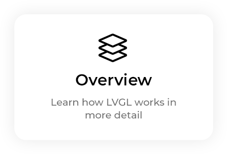
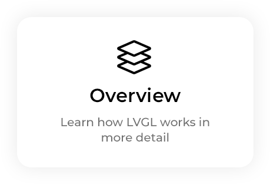

Welcome to the documentation of LVGL!

 

- Introduction
- Key features
- Requirements
- License
- Repository layout
- Release policy
- FAQ
- Where can I ask questions?
- Is my MCU/hardware supported?
- Is my display supported?
- LVGL doesn't start, randomly crashes or nothing is drawn on the display. What can be the problem?
- My display driver is not called. What have I missed?
- Why is the display driver called only once? Only the upper part of the display is refreshed.
- Why do I see only garbage on the screen?
- Why do I see nonsense colors on the screen?
- How to speed up my UI?
- How to reduce flash/ROM usage?
- How to reduce the RAM usage
- How to work with an operating system?
- Examples
- Get started
- Styles
- Size styles
- Background styles
- Border styles
- Outline styles
- Shadow styles
- Image styles
- Arc styles
- Text styles
- Line styles
- Transition
- Using multiple styles
- Local styles
- Add styles to parts and states
- Extending the current theme
- Opacity and Transformations
- Metallic knob with conic gradient
- Radial gradient as background
- Gradients for button background
- Animations
- Events
- Layouts
- Scrolling
- Widgets
- Get started
- Integration and Drivers
- Build systems
- Chip vendors
- Drivers
- Display
- Touchpad
- Libinput Driver
- X11 Display/Inputs driver
- Windows Display/Inputs driver
- OpenGL ES Display/Inputs driver
- Wayland Display/Inputs driver
- Frameworks
- IDEs
- (RT)OS
- Bindings
- Porting
- Overview
- Objects
- Positions, sizes, and layouts
- Styles
- States
- Cascading styles
- Inheritance
- Parts
- Initialize styles and set/get properties
- Add and remove styles to a widget
- Local styles
- Properties
- Transitions
- Opacity, Blend modes and Transformations
- Color filter
- Themes
- Examples
- Size styles
- Background styles
- Border styles
- Outline styles
- Shadow styles
- Image styles
- Arc styles
- Text styles
- Line styles
- Transition
- Using multiple styles
- Local styles
- Add styles to parts and states
- Extending the current theme
- Opacity and Transformations
- Metallic knob with conic gradient
- Radial gradient as background
- Gradients for button background
- API
- Style properties
- Scroll
- Layers
- Events
- Input devices
- Displays
- Colors
- Fonts
- Images
- File system
- Animations
- Timers
- Profiler
- Renderers and GPUs
- New widget
- VG-Lite Simulator
- Widgets
- Base object (lv_obj)
- Arc (lv_arc)
- Animation Image (lv_animimg)
- Bar (lv_bar)
- Button (lv_button)
- Button matrix (lv_buttonmatrix)
- Calendar (lv_calendar)
- Chart (lv_chart)
- Canvas (lv_canvas)
- Checkbox (lv_checkbox)
- Drop-down list (lv_dropdown)
- Image (lv_image)
- Image button (lv_imagebutton)
- Keyboard (lv_keyboard)
- Label (lv_label)
- LED (lv_led)
- Line (lv_line)
- List (lv_list)
- Lottie (lv_lottie)
- Menu (lv_menu)
- Message box (lv_msgbox)
- Roller (lv_roller)
- Scale (lv_scale)
- Slider (lv_slider)
- Span (lv_span)
- Spinbox (lv_spinbox)
- Spinner (lv_spinner)
- Switch (lv_switch)
- Table (lv_table)
- Tabview (lv_tabview)
- Text area (lv_textarea)
- Tile view (lv_tileview)
- Window (lv_win)
- Layouts
- 3rd party libraries
- File System Interfaces
- BMP decoder
- Tiny JPEG Decompressor (TJpgDec)
- libjpeg-turbo decoder
- LodePNG decoder
- libpng decoder
- GIF decoder
- FreeType support
- Tiny TTF font engine
- QR code
- Barcode
- Rlottie player
- FFmpeg support
- RLE Compress
- Arduino ESP littlefs
- Arduino SD
- littlefs
- Others
- API
- lv_api_map_v9_1.h
- lv_conf_kconfig.h
- lv_conf_internal.h
- lv_api_map_v9_0.h
- lv_api_map_v8.h
- lvgl.h
- lv_init.h
- font
- lv_binfont_loader.h
- lv_font.h
lv_font_glyph_format_tlv_font_glyph_format_t::LV_FONT_GLYPH_FORMAT_NONElv_font_glyph_format_t::LV_FONT_GLYPH_FORMAT_A1lv_font_glyph_format_t::LV_FONT_GLYPH_FORMAT_A2lv_font_glyph_format_t::LV_FONT_GLYPH_FORMAT_A4lv_font_glyph_format_t::LV_FONT_GLYPH_FORMAT_A8lv_font_glyph_format_t::LV_FONT_GLYPH_FORMAT_IMAGElv_font_glyph_format_t::LV_FONT_GLYPH_FORMAT_VECTORlv_font_glyph_format_t::LV_FONT_GLYPH_FORMAT_SVGlv_font_glyph_format_t::LV_FONT_GLYPH_FORMAT_CUSTOM
lv_font_subpx_tlv_font_kerning_tlv_font_get_glyph_bitmap()lv_font_get_glyph_dsc()lv_font_glyph_release_draw_data()lv_font_get_glyph_width()lv_font_get_line_height()lv_font_set_kerning()lv_font_default()lv_font_montserrat_8lv_font_montserrat_10lv_font_montserrat_12lv_font_montserrat_14lv_font_montserrat_16lv_font_montserrat_18lv_font_montserrat_20lv_font_montserrat_22lv_font_montserrat_24lv_font_montserrat_26lv_font_montserrat_28lv_font_montserrat_30lv_font_montserrat_32lv_font_montserrat_34lv_font_montserrat_36lv_font_montserrat_38lv_font_montserrat_40lv_font_montserrat_42lv_font_montserrat_44lv_font_montserrat_46lv_font_montserrat_48lv_font_montserrat_28_compressedlv_font_dejavu_16_persian_hebrewlv_font_simsun_14_cjklv_font_simsun_16_cjklv_font_unscii_8lv_font_unscii_16lv_font_glyph_dsc_tlv_font_glyph_dsc_t::resolved_fontlv_font_glyph_dsc_t::adv_wlv_font_glyph_dsc_t::box_wlv_font_glyph_dsc_t::box_hlv_font_glyph_dsc_t::ofs_xlv_font_glyph_dsc_t::ofs_ylv_font_glyph_dsc_t::formatlv_font_glyph_dsc_t::is_placeholderlv_font_glyph_dsc_t::indexlv_font_glyph_dsc_t::srclv_font_glyph_dsc_t::gidlv_font_glyph_dsc_t::entry
lv_font_t
- lv_font_fmt_txt.h
- lv_symbol_def.h
@16@16::LV_STR_SYMBOL_BULLET@16::LV_STR_SYMBOL_AUDIO@16::LV_STR_SYMBOL_VIDEO@16::LV_STR_SYMBOL_LIST@16::LV_STR_SYMBOL_OK@16::LV_STR_SYMBOL_CLOSE@16::LV_STR_SYMBOL_POWER@16::LV_STR_SYMBOL_SETTINGS@16::LV_STR_SYMBOL_HOME@16::LV_STR_SYMBOL_DOWNLOAD@16::LV_STR_SYMBOL_DRIVE@16::LV_STR_SYMBOL_REFRESH@16::LV_STR_SYMBOL_MUTE@16::LV_STR_SYMBOL_VOLUME_MID@16::LV_STR_SYMBOL_VOLUME_MAX@16::LV_STR_SYMBOL_IMAGE@16::LV_STR_SYMBOL_TINT@16::LV_STR_SYMBOL_PREV@16::LV_STR_SYMBOL_PLAY@16::LV_STR_SYMBOL_PAUSE@16::LV_STR_SYMBOL_STOP@16::LV_STR_SYMBOL_NEXT@16::LV_STR_SYMBOL_EJECT@16::LV_STR_SYMBOL_LEFT@16::LV_STR_SYMBOL_RIGHT@16::LV_STR_SYMBOL_PLUS@16::LV_STR_SYMBOL_MINUS@16::LV_STR_SYMBOL_EYE_OPEN@16::LV_STR_SYMBOL_EYE_CLOSE@16::LV_STR_SYMBOL_WARNING@16::LV_STR_SYMBOL_SHUFFLE@16::LV_STR_SYMBOL_UP@16::LV_STR_SYMBOL_DOWN@16::LV_STR_SYMBOL_LOOP@16::LV_STR_SYMBOL_DIRECTORY@16::LV_STR_SYMBOL_UPLOAD@16::LV_STR_SYMBOL_CALL@16::LV_STR_SYMBOL_CUT@16::LV_STR_SYMBOL_COPY@16::LV_STR_SYMBOL_SAVE@16::LV_STR_SYMBOL_BARS@16::LV_STR_SYMBOL_ENVELOPE@16::LV_STR_SYMBOL_CHARGE@16::LV_STR_SYMBOL_PASTE@16::LV_STR_SYMBOL_BELL@16::LV_STR_SYMBOL_KEYBOARD@16::LV_STR_SYMBOL_GPS@16::LV_STR_SYMBOL_FILE@16::LV_STR_SYMBOL_WIFI@16::LV_STR_SYMBOL_BATTERY_FULL@16::LV_STR_SYMBOL_BATTERY_3@16::LV_STR_SYMBOL_BATTERY_2@16::LV_STR_SYMBOL_BATTERY_1@16::LV_STR_SYMBOL_BATTERY_EMPTY@16::LV_STR_SYMBOL_USB@16::LV_STR_SYMBOL_BLUETOOTH@16::LV_STR_SYMBOL_TRASH@16::LV_STR_SYMBOL_EDIT@16::LV_STR_SYMBOL_BACKSPACE@16::LV_STR_SYMBOL_SD_CARD@16::LV_STR_SYMBOL_NEW_LINE@16::LV_STR_SYMBOL_DUMMY
- layouts
- lv_layout.h
- grid
- flex
- lv_flex.h
lv_flex_align_tlv_flex_flow_tlv_flex_flow_t::LV_FLEX_FLOW_ROWlv_flex_flow_t::LV_FLEX_FLOW_COLUMNlv_flex_flow_t::LV_FLEX_FLOW_ROW_WRAPlv_flex_flow_t::LV_FLEX_FLOW_ROW_REVERSElv_flex_flow_t::LV_FLEX_FLOW_ROW_WRAP_REVERSElv_flex_flow_t::LV_FLEX_FLOW_COLUMN_WRAPlv_flex_flow_t::LV_FLEX_FLOW_COLUMN_REVERSElv_flex_flow_t::LV_FLEX_FLOW_COLUMN_WRAP_REVERSE
lv_flex_init()lv_obj_set_flex_flow()lv_obj_set_flex_align()lv_obj_set_flex_grow()
- lv_flex.h
- libs
- libpng
- fsdrv
- ffmpeg
- rle
- libjpeg_turbo
- thorvg
- tvgLoadModule.h
- tvgTaskScheduler.h
- tvgSvgSceneBuilder.h
- tvgCanvas.h
- tvgRawLoader.h
- config.h
- tvgLottieInterpolator.h
- tvgLock.h
- tvgLottieExpressions.h
- tvgBinaryDesc.h
- tvgSwRasterTexmap.h
- tvgLines.h
- tvgLottieBuilder.h
- tvgXmlParser.h
- tvgAnimation.h
- thorvg.h
tvgtvg::Resulttvg::PathCommandtvg::StrokeCaptvg::StrokeJointvg::FillSpreadtvg::FillRuletvg::CompositeMethodtvg::BlendMethodtvg::CanvasEnginetvg::cast()tvg::cast()tvg::Pointtvg::Matrixtvg::Vertextvg::Polygontvg::Painttvg::Filltvg::Canvastvg::LinearGradienttvg::RadialGradienttvg::Shapetvg::Picturetvg::Scenetvg::Texttvg::SwCanvastvg::GlCanvastvg::WgCanvastvg::Initializertvg::Animationtvg::Savertvg::Accessor
- tvgText.h
- tvgSwCommon.h
- tvgStr.h
- tvgSaveModule.h
- tvgLoader.h
- tvgIteratorAccessor.h
- tvgPicture.h
- thorvg_lottie.h
- tvgFill.h
- tvgCommon.h
- tvgPaint.h
- tvgSwRasterAvx.h
- tvgFrameModule.h
- tvgSvgUtil.h
- tvgArray.h
- tvgSwRasterC.h
- tvgLottieModel.h
- tvgScene.h
- tvgCompressor.h
- tvgSvgCssStyle.h
- tvgRender.h
- tvgShape.h
- tvgSwRenderer.h
- tvgSvgLoader.h
- tvgSwRasterNeon.h
- tvgMath.h
- tvgLottieLoader.h
- tvgLottieProperty.h
- tvgSvgLoaderCommon.h
- tvgLottieParserHandler.h
- tvgSvgPath.h
- thorvg_capi.h
Tvg_CanvasTvg_PaintTvg_GradientTvg_SaverTvg_AnimationTvg_EngineTvg_ResultTvg_Composite_MethodTvg_Composite_Method::TVG_COMPOSITE_METHOD_NONETvg_Composite_Method::TVG_COMPOSITE_METHOD_CLIP_PATHTvg_Composite_Method::TVG_COMPOSITE_METHOD_ALPHA_MASKTvg_Composite_Method::TVG_COMPOSITE_METHOD_INVERSE_ALPHA_MASKTvg_Composite_Method::TVG_COMPOSITE_METHOD_LUMA_MASKTvg_Composite_Method::TVG_COMPOSITE_METHOD_INVERSE_LUMA_MASK
Tvg_Blend_MethodTvg_Blend_Method::TVG_BLEND_METHOD_NORMALTvg_Blend_Method::TVG_BLEND_METHOD_ADDTvg_Blend_Method::TVG_BLEND_METHOD_SCREENTvg_Blend_Method::TVG_BLEND_METHOD_MULTIPLYTvg_Blend_Method::TVG_BLEND_METHOD_OVERLAYTvg_Blend_Method::TVG_BLEND_METHOD_DIFFERENCETvg_Blend_Method::TVG_BLEND_METHOD_EXCLUSIONTvg_Blend_Method::TVG_BLEND_METHOD_SRCOVERTvg_Blend_Method::TVG_BLEND_METHOD_DARKENTvg_Blend_Method::TVG_BLEND_METHOD_LIGHTENTvg_Blend_Method::TVG_BLEND_METHOD_COLORDODGETvg_Blend_Method::TVG_BLEND_METHOD_COLORBURNTvg_Blend_Method::TVG_BLEND_METHOD_HARDLIGHTTvg_Blend_Method::TVG_BLEND_METHOD_SOFTLIGHT
Tvg_IdentifierTvg_Path_CommandTvg_Stroke_CapTvg_Stroke_JoinTvg_Stroke_FillTvg_Fill_RuleTvg_Mempool_PolicyTvg_Colorspacetvg_engine_init()tvg_engine_term()tvg_swcanvas_create()tvg_swcanvas_set_target()tvg_swcanvas_set_mempool()tvg_canvas_destroy()tvg_canvas_push()tvg_canvas_reserve()tvg_canvas_clear()tvg_canvas_update()tvg_canvas_update_paint()tvg_canvas_draw()tvg_canvas_sync()tvg_canvas_set_viewport()tvg_paint_del()tvg_paint_scale()tvg_paint_rotate()tvg_paint_translate()tvg_paint_set_transform()tvg_paint_get_transform()tvg_paint_set_opacity()tvg_paint_get_opacity()tvg_paint_duplicate()tvg_paint_get_bounds()tvg_paint_set_composite_method()tvg_paint_get_composite_method()tvg_paint_get_identifier()tvg_paint_set_blend_method()tvg_paint_get_blend_method()tvg_shape_new()tvg_shape_reset()tvg_shape_move_to()tvg_shape_line_to()tvg_shape_cubic_to()tvg_shape_close()tvg_shape_append_rect()tvg_shape_append_circle()tvg_shape_append_arc()tvg_shape_append_path()tvg_shape_get_path_coords()tvg_shape_get_path_commands()tvg_shape_set_stroke_width()tvg_shape_get_stroke_width()tvg_shape_set_stroke_color()tvg_shape_get_stroke_color()tvg_shape_set_stroke_linear_gradient()tvg_shape_set_stroke_radial_gradient()tvg_shape_get_stroke_gradient()tvg_shape_set_stroke_dash()tvg_shape_get_stroke_dash()tvg_shape_set_stroke_cap()tvg_shape_get_stroke_cap()tvg_shape_set_stroke_join()tvg_shape_get_stroke_join()tvg_shape_set_stroke_miterlimit()tvg_shape_get_stroke_miterlimit()tvg_shape_set_fill_color()tvg_shape_get_fill_color()tvg_shape_set_fill_rule()tvg_shape_get_fill_rule()tvg_shape_set_paint_order()tvg_shape_set_linear_gradient()tvg_shape_set_radial_gradient()tvg_shape_get_gradient()tvg_linear_gradient_new()tvg_radial_gradient_new()tvg_linear_gradient_set()tvg_linear_gradient_get()tvg_radial_gradient_set()tvg_radial_gradient_get()tvg_gradient_set_color_stops()tvg_gradient_get_color_stops()tvg_gradient_set_spread()tvg_gradient_get_spread()tvg_gradient_set_transform()tvg_gradient_get_transform()tvg_gradient_get_identifier()tvg_gradient_duplicate()tvg_gradient_del()tvg_picture_new()tvg_picture_load()tvg_picture_load_raw()tvg_picture_load_data()tvg_picture_set_size()tvg_picture_get_size()tvg_scene_new()tvg_scene_reserve()tvg_scene_push()tvg_scene_clear()tvg_saver_new()tvg_saver_save()tvg_saver_sync()tvg_saver_del()tvg_animation_new()tvg_animation_set_frame()tvg_animation_get_picture()tvg_animation_get_frame()tvg_animation_get_total_frame()tvg_animation_get_duration()tvg_animation_set_segment()tvg_animation_get_segment()tvg_animation_del()tvg_lottie_animation_new()tvg_lottie_animation_override()tvg_lottie_animation_set_marker()tvg_lottie_animation_get_markers_cnt()tvg_lottie_animation_get_marker()Tvg_Color_StopTvg_PointTvg_Matrix
- tvgInlist.h
- tvgLottieParser.h
- rapidjson
- rlottie
- tjpgd
- tjpgdcnf.h
- tjpgd.h
jd_yuv_tJDECJRESULTjd_prepare()jd_decomp()jd_mcu_load()jd_mcu_output()jd_restart()JRECTJDEC::dctrJDEC::dptrJDEC::inbufJDEC::dbitJDEC::scaleJDEC::msxJDEC::msyJDEC::qtidJDEC::ncompJDEC::dcvJDEC::nrstJDEC::rstJDEC::rscJDEC::widthJDEC::heightJDEC::huffbitsJDEC::huffcodeJDEC::huffdataJDEC::qttblJDEC::wregJDEC::markerJDEC::workbufJDEC::mcubufJDEC::poolJDEC::pool_originalJDEC::sz_poolJDEC::infuncJDEC::device
- lv_tjpgd.h
- freetype
- lv_freetype.h
LV_FT_FONT_STYLElv_freetype_outline_tlv_freetype_font_style_tlv_freetype_font_render_mode_tlv_freetype_outline_type_tlv_freetype_init()lv_freetype_uninit()lv_freetype_font_create()lv_freetype_font_delete()lv_freetype_outline_add_event()lv_freetype_outline_get_scale()lv_freetype_is_outline_font()
- ftmodule.h
- ftoption.h
- lv_freetype.h
- lz4
- lz4.h
LZ4_stream_tLZ4_streamDecode_tLZ4_i8LZ4_byteLZ4_u16LZ4_u32LZ4_stream_t_internalLZ4_versionNumber()LZ4_versionString()LZ4_compress_default()LZ4_decompress_safe()LZ4_compressBound()LZ4_compress_fast()LZ4_sizeofState()LZ4_compress_fast_extState()LZ4_compress_destSize()LZ4_decompress_safe_partial()LZ4_resetStream_fast()LZ4_loadDict()LZ4_compress_fast_continue()LZ4_saveDict()LZ4_setStreamDecode()LZ4_decoderRingBufferSize()LZ4_decompress_safe_continue()LZ4_decompress_safe_usingDict()LZ4_decompress_safe_partial_usingDict()LZ4_initStream()LZ4_compress()LZ4_compress_limitedOutput()LZ4_compress_withState()LZ4_compress_limitedOutput_withState()LZ4_compress_continue()LZ4_compress_limitedOutput_continue()LZ4_uncompress()LZ4_uncompress_unknownOutputSize()LZ4_create()LZ4_sizeofStreamState()LZ4_resetStreamState()LZ4_slideInputBuffer()LZ4_decompress_safe_withPrefix64k()LZ4_decompress_fast_withPrefix64k()LZ4_decompress_fast()LZ4_decompress_fast_continue()LZ4_decompress_fast_usingDict()LZ4_resetStream()LZ4_stream_t_internal::hashTableLZ4_stream_t_internal::dictionaryLZ4_stream_t_internal::dictCtxLZ4_stream_t_internal::currentOffsetLZ4_stream_t_internal::tableTypeLZ4_stream_t_internal::dictSizeLZ4_stream_uLZ4_streamDecode_t_internalLZ4_streamDecode_u
- lz4.h
- gif
- gifdec_mve.h
- gifdec.h
gd_Palettegd_GCEgd_GIFgd_open_gif_file()gd_open_gif_data()gd_render_frame()gd_get_frame()gd_rewind()gd_close_gif()_gd_Palette_gd_GCE_gd_GIF_gd_GIF::fd_gd_GIF::data_gd_GIF::is_file_gd_GIF::f_rw_p_gd_GIF::anim_start_gd_GIF::width_gd_GIF::height_gd_GIF::depth_gd_GIF::loop_count_gd_GIF::gce_gd_GIF::palette_gd_GIF::lct_gd_GIF::gct_gd_GIF::plain_text_gd_GIF::comment_gd_GIF::application_gd_GIF::fx_gd_GIF::fy_gd_GIF::fw_gd_GIF::fh_gd_GIF::bgindex_gd_GIF::canvas_gd_GIF::frame
- lv_gif.h
- bin_decoder
- tiny_ttf
- lv_tiny_ttf.h
- stb_rect_pack.h
- stb_truetype_htcw.h
stbtt_kerningentry@20@21@22@23@24@25@25::STBTT_MS_LANG_ENGLISH@25::STBTT_MS_LANG_ITALIAN@25::STBTT_MS_LANG_CHINESE@25::STBTT_MS_LANG_JAPANESE@25::STBTT_MS_LANG_DUTCH@25::STBTT_MS_LANG_KOREAN@25::STBTT_MS_LANG_FRENCH@25::STBTT_MS_LANG_RUSSIAN@25::STBTT_MS_LANG_GERMAN@25::STBTT_MS_LANG_SPANISH@25::STBTT_MS_LANG_HEBREW@25::STBTT_MS_LANG_SWEDISH
@26@26::STBTT_MAC_LANG_ENGLISH@26::STBTT_MAC_LANG_JAPANESE@26::STBTT_MAC_LANG_ARABIC@26::STBTT_MAC_LANG_KOREAN@26::STBTT_MAC_LANG_DUTCH@26::STBTT_MAC_LANG_RUSSIAN@26::STBTT_MAC_LANG_FRENCH@26::STBTT_MAC_LANG_SPANISH@26::STBTT_MAC_LANG_GERMAN@26::STBTT_MAC_LANG_SWEDISH@26::STBTT_MAC_LANG_HEBREW@26::STBTT_MAC_LANG_CHINESE_SIMPLIFIED@26::STBTT_MAC_LANG_ITALIAN@26::STBTT_MAC_LANG_CHINESE_TRAD
stbtt_GetBakedQuad()stbtt_PackBegin()stbtt_PackEnd()stbtt_PackSetOversampling()stbtt_PackSetSkipMissingCodepoints()stbtt_GetPackedQuad()stbtt_PackFontRangesGatherRects()stbtt_PackFontRangesPackRects()stbtt_PackFontRangesRenderIntoRects()stbtt_GetNumberOfFonts()stbtt_GetFontOffsetForIndex()stbtt_InitFont()stbtt_FindGlyphIndex()stbtt_ScaleForPixelHeight()stbtt_ScaleForMappingEmToPixels()stbtt_GetFontVMetrics()stbtt_GetFontVMetricsOS2()stbtt_GetFontBoundingBox()stbtt_GetCodepointHMetrics()stbtt_GetCodepointKernAdvance()stbtt_GetCodepointBox()stbtt_GetGlyphHMetrics()stbtt_GetGlyphKernAdvance()stbtt_GetGlyphBox()stbtt_GetKerningTableLength()stbtt_GetKerningTable()stbtt_IsGlyphEmpty()stbtt_GetCodepointShape()stbtt_GetGlyphShape()stbtt_FreeShape()stbtt_FindSVGDoc()stbtt_GetCodepointSVG()stbtt_GetGlyphSVG()stbtt_FreeBitmap()stbtt_GetCodepointBitmap()stbtt_GetCodepointBitmapSubpixel()stbtt_MakeCodepointBitmap()stbtt_MakeCodepointBitmapSubpixel()stbtt_MakeCodepointBitmapSubpixelPrefilter()stbtt_GetCodepointBitmapBox()stbtt_GetCodepointBitmapBoxSubpixel()stbtt_GetGlyphBitmap()stbtt_GetGlyphBitmapSubpixel()stbtt_MakeGlyphBitmap()stbtt_MakeGlyphBitmapSubpixel()stbtt_MakeGlyphBitmapSubpixelPrefilter()stbtt_GetGlyphBitmapBox()stbtt_GetGlyphBitmapBoxSubpixel()stbtt_Rasterize()stbtt_FreeSDF()stbtt_GetGlyphSDF()stbtt_GetCodepointSDF()stbtt_FindMatchingFont()stbtt_CompareUTF8toUTF16_bigendian()stbtt_GetFontNameString()stbtt__bufstbtt_bakedcharstbtt_aligned_quadstbtt_packedcharstbtt_pack_rangestbtt_pack_contextstbtt_pack_context::user_allocator_contextstbtt_pack_context::pack_infostbtt_pack_context::widthstbtt_pack_context::heightstbtt_pack_context::stride_in_bytesstbtt_pack_context::paddingstbtt_pack_context::skip_missingstbtt_pack_context::h_oversamplestbtt_pack_context::v_oversamplestbtt_pack_context::pixelsstbtt_pack_context::nodes
stbtt_fontinfostbtt_fontinfo::userdatastbtt_fontinfo::datastbtt_fontinfo::fontstartstbtt_fontinfo::numGlyphsstbtt_fontinfo::locastbtt_fontinfo::headstbtt_fontinfo::glyfstbtt_fontinfo::hheastbtt_fontinfo::hmtxstbtt_fontinfo::kernstbtt_fontinfo::gposstbtt_fontinfo::svgstbtt_fontinfo::index_mapstbtt_fontinfo::indexToLocFormatstbtt_fontinfo::cffstbtt_fontinfo::charstringsstbtt_fontinfo::gsubrsstbtt_fontinfo::subrsstbtt_fontinfo::fontdictsstbtt_fontinfo::fdselect
_stbtt_kerningentrystbtt_vertexstbtt__bitmap
- qrcode
- lv_qrcode.h
- qrcodegen.h
qrcodegen_Eccqrcodegen_Maskqrcodegen_Modeqrcodegen_encodeText()qrcodegen_encodeBinary()qrcodegen_encodeSegments()qrcodegen_encodeSegmentsAdvanced()qrcodegen_isAlphanumeric()qrcodegen_isNumeric()qrcodegen_calcSegmentBufferSize()qrcodegen_makeBytes()qrcodegen_makeNumeric()qrcodegen_makeAlphanumeric()qrcodegen_makeEci()qrcodegen_getSize()qrcodegen_getModule()qrcodegen_version2size()qrcodegen_getMinFitVersion()qrcodegen_Segment
- lodepng
- lodepng.h
LodePNGDecompressSettingsLodePNGCompressSettingsLodePNGColorModeLodePNGTimeLodePNGInfoLodePNGDecoderSettingsLodePNGColorStatsLodePNGEncoderSettingsLodePNGStateLodePNGColorTypeLodePNGFilterStrategyLodePNGFilterStrategy::LFS_ZEROLodePNGFilterStrategy::LFS_ONELodePNGFilterStrategy::LFS_TWOLodePNGFilterStrategy::LFS_THREELodePNGFilterStrategy::LFS_FOURLodePNGFilterStrategy::LFS_MINSUMLodePNGFilterStrategy::LFS_ENTROPYLodePNGFilterStrategy::LFS_BRUTE_FORCELodePNGFilterStrategy::LFS_PREDEFINED
lodepng_decode_memory()lodepng_decode32()lodepng_decode24()lodepng_decode_file()lodepng_decode32_file()lodepng_decode24_file()lodepng_encode_memory()lodepng_encode32()lodepng_encode24()lodepng_encode_file()lodepng_encode32_file()lodepng_encode24_file()lodepng_error_text()lodepng_decompress_settings_init()lodepng_compress_settings_init()lodepng_color_mode_init()lodepng_color_mode_cleanup()lodepng_color_mode_copy()lodepng_color_mode_make()lodepng_palette_clear()lodepng_palette_add()lodepng_get_bpp()lodepng_get_channels()lodepng_is_greyscale_type()lodepng_is_alpha_type()lodepng_is_palette_type()lodepng_has_palette_alpha()lodepng_can_have_alpha()lodepng_get_raw_size()lodepng_info_init()lodepng_info_cleanup()lodepng_info_copy()lodepng_add_text()lodepng_clear_text()lodepng_add_itext()lodepng_clear_itext()lodepng_set_icc()lodepng_clear_icc()lodepng_convert()lodepng_decoder_settings_init()lodepng_color_stats_init()lodepng_compute_color_stats()lodepng_encoder_settings_init()lodepng_state_init()lodepng_state_cleanup()lodepng_state_copy()lodepng_decode()lodepng_inspect()lodepng_inspect_chunk()lodepng_encode()lodepng_chunk_length()lodepng_chunk_type()lodepng_chunk_type_equals()lodepng_chunk_ancillary()lodepng_chunk_private()lodepng_chunk_safetocopy()lodepng_chunk_data()lodepng_chunk_data_const()lodepng_chunk_check_crc()lodepng_chunk_generate_crc()lodepng_chunk_next()lodepng_chunk_next_const()lodepng_chunk_find()lodepng_chunk_find_const()lodepng_chunk_append()lodepng_chunk_create()lodepng_crc32()lodepng_inflate()lodepng_zlib_decompress()lodepng_zlib_compress()lodepng_huffman_code_lengths()lodepng_deflate()lodepng_load_file()lodepng_save_file()LODEPNG_VERSION_STRINGlodepng_default_decompress_settingslodepng_default_compress_settingsLodePNGDecompressSettings::ignore_adler32LodePNGDecompressSettings::ignore_nlenLodePNGDecompressSettings::max_output_sizeLodePNGDecompressSettings::custom_zlibLodePNGDecompressSettings::custom_inflateLodePNGDecompressSettings::custom_contextLodePNGCompressSettings::btypeLodePNGCompressSettings::use_lz77LodePNGCompressSettings::windowsizeLodePNGCompressSettings::minmatchLodePNGCompressSettings::nicematchLodePNGCompressSettings::lazymatchingLodePNGCompressSettings::custom_zlibLodePNGCompressSettings::custom_deflateLodePNGCompressSettings::custom_contextLodePNGColorMode::colortypeLodePNGColorMode::bitdepthLodePNGColorMode::paletteLodePNGColorMode::palettesizeLodePNGColorMode::key_definedLodePNGColorMode::key_rLodePNGColorMode::key_gLodePNGColorMode::key_bLodePNGTime::yearLodePNGTime::monthLodePNGTime::dayLodePNGTime::hourLodePNGTime::minuteLodePNGTime::secondLodePNGInfo::compression_methodLodePNGInfo::filter_methodLodePNGInfo::interlace_methodLodePNGInfo::colorLodePNGInfo::background_definedLodePNGInfo::background_rLodePNGInfo::background_gLodePNGInfo::background_bLodePNGInfo::text_numLodePNGInfo::text_keysLodePNGInfo::text_stringsLodePNGInfo::itext_numLodePNGInfo::itext_keysLodePNGInfo::itext_langtagsLodePNGInfo::itext_transkeysLodePNGInfo::itext_stringsLodePNGInfo::time_definedLodePNGInfo::timeLodePNGInfo::phys_definedLodePNGInfo::phys_xLodePNGInfo::phys_yLodePNGInfo::phys_unitLodePNGInfo::gama_definedLodePNGInfo::gama_gammaLodePNGInfo::chrm_definedLodePNGInfo::chrm_white_xLodePNGInfo::chrm_white_yLodePNGInfo::chrm_red_xLodePNGInfo::chrm_red_yLodePNGInfo::chrm_green_xLodePNGInfo::chrm_green_yLodePNGInfo::chrm_blue_xLodePNGInfo::chrm_blue_yLodePNGInfo::srgb_definedLodePNGInfo::srgb_intentLodePNGInfo::iccp_definedLodePNGInfo::iccp_nameLodePNGInfo::iccp_profileLodePNGInfo::iccp_profile_sizeLodePNGInfo::sbit_definedLodePNGInfo::sbit_rLodePNGInfo::sbit_gLodePNGInfo::sbit_bLodePNGInfo::sbit_aLodePNGInfo::unknown_chunks_dataLodePNGInfo::unknown_chunks_sizeLodePNGDecoderSettings::zlibsettingsLodePNGDecoderSettings::ignore_crcLodePNGDecoderSettings::ignore_criticalLodePNGDecoderSettings::ignore_endLodePNGDecoderSettings::color_convertLodePNGDecoderSettings::read_text_chunksLodePNGDecoderSettings::remember_unknown_chunksLodePNGDecoderSettings::max_text_sizeLodePNGDecoderSettings::max_icc_sizeLodePNGColorStats::coloredLodePNGColorStats::keyLodePNGColorStats::key_rLodePNGColorStats::key_gLodePNGColorStats::key_bLodePNGColorStats::alphaLodePNGColorStats::numcolorsLodePNGColorStats::paletteLodePNGColorStats::bitsLodePNGColorStats::numpixelsLodePNGColorStats::allow_paletteLodePNGColorStats::allow_greyscaleLodePNGEncoderSettings::zlibsettingsLodePNGEncoderSettings::auto_convertLodePNGEncoderSettings::filter_palette_zeroLodePNGEncoderSettings::filter_strategyLodePNGEncoderSettings::predefined_filtersLodePNGEncoderSettings::force_paletteLodePNGEncoderSettings::add_idLodePNGEncoderSettings::text_compressionLodePNGState::decoderLodePNGState::encoderLodePNGState::info_rawLodePNGState::info_pngLodePNGState::error
- lv_lodepng.h
- lodepng.h
- bmp
- barcode
- draw
- lv_draw_triangle.h
- lv_draw_arc.h
- lv_draw_rect.h
lv_draw_rect_dsc_init()lv_draw_fill_dsc_init()lv_draw_task_get_fill_dsc()lv_draw_border_dsc_init()lv_draw_task_get_border_dsc()lv_draw_box_shadow_dsc_init()lv_draw_task_get_box_shadow_dsc()lv_draw_rect()lv_draw_rect_dsc_tlv_draw_rect_dsc_t::baselv_draw_rect_dsc_t::radiuslv_draw_rect_dsc_t::bg_opalv_draw_rect_dsc_t::bg_colorlv_draw_rect_dsc_t::bg_gradlv_draw_rect_dsc_t::bg_image_srclv_draw_rect_dsc_t::bg_image_symbol_fontlv_draw_rect_dsc_t::bg_image_recolorlv_draw_rect_dsc_t::bg_image_opalv_draw_rect_dsc_t::bg_image_recolor_opalv_draw_rect_dsc_t::bg_image_tiledlv_draw_rect_dsc_t::border_colorlv_draw_rect_dsc_t::border_widthlv_draw_rect_dsc_t::border_opalv_draw_rect_dsc_t::border_sidelv_draw_rect_dsc_t::border_postlv_draw_rect_dsc_t::outline_colorlv_draw_rect_dsc_t::outline_widthlv_draw_rect_dsc_t::outline_padlv_draw_rect_dsc_t::outline_opalv_draw_rect_dsc_t::shadow_colorlv_draw_rect_dsc_t::shadow_widthlv_draw_rect_dsc_t::shadow_offset_xlv_draw_rect_dsc_t::shadow_offset_ylv_draw_rect_dsc_t::shadow_spreadlv_draw_rect_dsc_t::shadow_opa
lv_draw_fill_dsc_tlv_draw_border_dsc_tlv_draw_box_shadow_dsc_t
- lv_draw_image.h
lv_draw_image_dsc_tlv_draw_image_core_cblv_draw_image_dsc_init()lv_draw_task_get_image_dsc()lv_draw_image()lv_draw_layer()lv_image_src_get_type()lv_draw_image_dsc_t::baselv_draw_image_dsc_t::srclv_draw_image_dsc_t::headerlv_draw_image_dsc_t::rotationlv_draw_image_dsc_t::scale_xlv_draw_image_dsc_t::scale_ylv_draw_image_dsc_t::skew_xlv_draw_image_dsc_t::skew_ylv_draw_image_dsc_t::pivotlv_draw_image_dsc_t::recolorlv_draw_image_dsc_t::recolor_opalv_draw_image_dsc_t::opalv_draw_image_dsc_t::blend_modelv_draw_image_dsc_t::antialiaslv_draw_image_dsc_t::tilelv_draw_image_dsc_t::suplv_draw_image_dsc_t::image_arealv_draw_image_dsc_t::clip_radiuslv_draw_image_dsc_t::bitmap_mask_src
- lv_draw_buf.h
lv_draw_buf_malloc_cblv_draw_buf_free_cblv_draw_buf_align_cblv_draw_buf_cache_operation_cblv_draw_buf_width_to_stride_cblv_draw_buf_init_with_default_handlers()lv_draw_buf_handlers_init()lv_draw_buf_get_handlers()lv_draw_buf_get_font_handlers()lv_draw_buf_get_image_handlers()lv_draw_buf_align()lv_draw_buf_align_ex()lv_draw_buf_invalidate_cache()lv_draw_buf_flush_cache()lv_draw_buf_width_to_stride()lv_draw_buf_width_to_stride_ex()lv_draw_buf_clear()lv_draw_buf_copy()lv_draw_buf_create()lv_draw_buf_create_ex()lv_draw_buf_dup()lv_draw_buf_dup_ex()lv_draw_buf_init()lv_draw_buf_reshape()lv_draw_buf_destroy()lv_draw_buf_goto_xy()lv_draw_buf_adjust_stride()lv_draw_buf_premultiply()lv_draw_buf_has_flag()lv_draw_buf_set_flag()lv_draw_buf_clear_flag()lv_draw_buf_from_image()lv_draw_buf_to_image()lv_draw_buf_set_palette()lv_image_buf_set_palette()lv_image_buf_free()lv_draw_buf_t
- lv_image_decoder.h
lv_image_decoder_info_f_tlv_image_decoder_open_f_tlv_image_decoder_get_area_cb_tlv_image_decoder_close_f_tlv_image_src_tlv_image_decoder_get_info()lv_image_decoder_open()lv_image_decoder_get_area()lv_image_decoder_close()lv_image_decoder_create()lv_image_decoder_delete()lv_image_decoder_get_next()lv_image_decoder_set_info_cb()lv_image_decoder_set_open_cb()lv_image_decoder_set_get_area_cb()lv_image_decoder_set_close_cb()lv_image_decoder_add_to_cache()lv_image_decoder_post_process()
- lv_image_dsc.h
lv_image_flags_tlv_image_flags_t::LV_IMAGE_FLAGS_PREMULTIPLIEDlv_image_flags_t::LV_IMAGE_FLAGS_COMPRESSEDlv_image_flags_t::LV_IMAGE_FLAGS_ALLOCATEDlv_image_flags_t::LV_IMAGE_FLAGS_MODIFIABLElv_image_flags_t::LV_IMAGE_FLAGS_USER1lv_image_flags_t::LV_IMAGE_FLAGS_USER2lv_image_flags_t::LV_IMAGE_FLAGS_USER3lv_image_flags_t::LV_IMAGE_FLAGS_USER4lv_image_flags_t::LV_IMAGE_FLAGS_USER5lv_image_flags_t::LV_IMAGE_FLAGS_USER6lv_image_flags_t::LV_IMAGE_FLAGS_USER7lv_image_flags_t::LV_IMAGE_FLAGS_USER8
lv_image_compress_tlv_image_header_tlv_yuv_plane_tlv_yuv_buf_tlv_image_dsc_t
- lv_draw_vector.h
vector_draw_task_cblv_vector_fill_tlv_vector_stroke_cap_tlv_vector_stroke_join_tlv_vector_path_quality_tlv_vector_blend_tlv_vector_blend_t::LV_VECTOR_BLEND_SRC_OVERlv_vector_blend_t::LV_VECTOR_BLEND_SRC_INlv_vector_blend_t::LV_VECTOR_BLEND_DST_OVERlv_vector_blend_t::LV_VECTOR_BLEND_DST_INlv_vector_blend_t::LV_VECTOR_BLEND_SCREENlv_vector_blend_t::LV_VECTOR_BLEND_MULTIPLYlv_vector_blend_t::LV_VECTOR_BLEND_NONElv_vector_blend_t::LV_VECTOR_BLEND_ADDITIVElv_vector_blend_t::LV_VECTOR_BLEND_SUBTRACTIVE
lv_vector_path_op_tlv_vector_draw_style_tlv_vector_gradient_spread_tlv_vector_gradient_style_tlv_matrix_transform_point()lv_matrix_transform_path()lv_vector_path_create()lv_vector_path_copy()lv_vector_path_clear()lv_vector_path_delete()lv_vector_path_move_to()lv_vector_path_line_to()lv_vector_path_quad_to()lv_vector_path_cubic_to()lv_vector_path_close()lv_vector_path_get_bounding()lv_vector_path_append_rect()lv_vector_path_append_circle()lv_vector_path_append_arc()lv_vector_path_append_path()lv_vector_dsc_create()lv_vector_dsc_delete()lv_vector_dsc_set_transform()lv_vector_dsc_set_blend_mode()lv_vector_dsc_set_fill_color32()lv_vector_dsc_set_fill_color()lv_vector_dsc_set_fill_opa()lv_vector_dsc_set_fill_rule()lv_vector_dsc_set_fill_image()lv_vector_dsc_set_fill_linear_gradient()lv_vector_dsc_set_fill_radial_gradient()lv_vector_dsc_set_fill_gradient_spread()lv_vector_dsc_set_fill_gradient_color_stops()lv_vector_dsc_set_fill_transform()lv_vector_dsc_set_stroke_color32()lv_vector_dsc_set_stroke_color()lv_vector_dsc_set_stroke_opa()lv_vector_dsc_set_stroke_width()lv_vector_dsc_set_stroke_dash()lv_vector_dsc_set_stroke_cap()lv_vector_dsc_set_stroke_join()lv_vector_dsc_set_stroke_miter_limit()lv_vector_dsc_set_stroke_linear_gradient()lv_vector_dsc_set_stroke_radial_gradient()lv_vector_dsc_set_stroke_gradient_spread()lv_vector_dsc_set_stroke_gradient_color_stops()lv_vector_dsc_set_stroke_transform()lv_vector_dsc_identity()lv_vector_dsc_scale()lv_vector_dsc_rotate()lv_vector_dsc_translate()lv_vector_dsc_skew()lv_vector_dsc_add_path()lv_vector_clear_area()lv_draw_vector()lv_fpoint_t
- lv_draw.h
lv_draw_task_type_tlv_draw_task_type_t::LV_DRAW_TASK_TYPE_NONElv_draw_task_type_t::LV_DRAW_TASK_TYPE_FILLlv_draw_task_type_t::LV_DRAW_TASK_TYPE_BORDERlv_draw_task_type_t::LV_DRAW_TASK_TYPE_BOX_SHADOWlv_draw_task_type_t::LV_DRAW_TASK_TYPE_LABELlv_draw_task_type_t::LV_DRAW_TASK_TYPE_IMAGElv_draw_task_type_t::LV_DRAW_TASK_TYPE_LAYERlv_draw_task_type_t::LV_DRAW_TASK_TYPE_LINElv_draw_task_type_t::LV_DRAW_TASK_TYPE_ARClv_draw_task_type_t::LV_DRAW_TASK_TYPE_TRIANGLElv_draw_task_type_t::LV_DRAW_TASK_TYPE_MASK_RECTANGLElv_draw_task_type_t::LV_DRAW_TASK_TYPE_MASK_BITMAPlv_draw_task_type_t::LV_DRAW_TASK_TYPE_VECTOR
lv_draw_task_state_tlv_draw_init()lv_draw_deinit()lv_draw_create_unit()lv_draw_add_task()lv_draw_finalize_task_creation()lv_draw_dispatch()lv_draw_dispatch_layer()lv_draw_dispatch_wait_for_request()lv_draw_wait_for_finish()lv_draw_dispatch_request()lv_draw_get_unit_count()lv_draw_get_next_available_task()lv_draw_get_dependent_count()lv_draw_layer_create()lv_draw_layer_alloc_buf()lv_draw_layer_go_to_xy()lv_draw_task_get_type()lv_draw_task_get_draw_dsc()lv_draw_task_get_area()lv_layer_tlv_draw_dsc_base_t
- lv_draw_label.h
lv_draw_glyph_cb_tlv_draw_label_dsc_init()lv_draw_task_get_label_dsc()lv_draw_glyph_dsc_init()lv_draw_label()lv_draw_character()lv_draw_label_iterate_characters()lv_draw_label_dsc_tlv_draw_label_dsc_t::baselv_draw_label_dsc_t::textlv_draw_label_dsc_t::fontlv_draw_label_dsc_t::sel_startlv_draw_label_dsc_t::sel_endlv_draw_label_dsc_t::colorlv_draw_label_dsc_t::sel_colorlv_draw_label_dsc_t::sel_bg_colorlv_draw_label_dsc_t::line_spacelv_draw_label_dsc_t::letter_spacelv_draw_label_dsc_t::ofs_xlv_draw_label_dsc_t::ofs_ylv_draw_label_dsc_t::opalv_draw_label_dsc_t::bidi_dirlv_draw_label_dsc_t::alignlv_draw_label_dsc_t::flaglv_draw_label_dsc_t::decorlv_draw_label_dsc_t::blend_modelv_draw_label_dsc_t::text_locallv_draw_label_dsc_t::hint
- lv_draw_mask.h
- lv_draw_line.h
lv_draw_line_dsc_init()lv_draw_task_get_line_dsc()lv_draw_line()lv_draw_line_dsc_tlv_draw_line_dsc_t::baselv_draw_line_dsc_t::p1lv_draw_line_dsc_t::p2lv_draw_line_dsc_t::colorlv_draw_line_dsc_t::widthlv_draw_line_dsc_t::dash_widthlv_draw_line_dsc_t::dash_gaplv_draw_line_dsc_t::opalv_draw_line_dsc_t::blend_modelv_draw_line_dsc_t::round_startlv_draw_line_dsc_t::round_endlv_draw_line_dsc_t::raw_end
- renesas
- dave2d
- lv_draw_dave2d.h
lv_draw_dave2d_init()lv_draw_dave2d_image()lv_draw_dave2d_fill()lv_draw_dave2d_border()lv_draw_dave2d_box_shadow()lv_draw_dave2d_label()lv_draw_dave2d_arc()lv_draw_dave2d_line()lv_draw_dave2d_layer()lv_draw_dave2d_triangle()lv_draw_dave2d_mask_rect()lv_draw_dave2d_transform()lv_draw_dave2d_unit_t
- lv_draw_dave2d_utils.h
- lv_draw_dave2d.h
- dave2d
- sdl
- vg_lite
- lv_draw_vg_lite.h
lv_draw_buf_vg_lite_init_handlers()lv_draw_vg_lite_init()lv_draw_vg_lite_deinit()lv_draw_vg_lite_arc()lv_draw_vg_lite_box_shadow()lv_draw_vg_lite_border()lv_draw_vg_lite_fill()lv_draw_vg_lite_img()lv_draw_vg_lite_label()lv_draw_vg_lite_layer()lv_draw_vg_lite_line()lv_draw_vg_lite_triangle()lv_draw_vg_lite_mask_rect()lv_draw_vg_lite_vector()
- lv_vg_lite_utils.h
lv_vg_lite_dump_info()lv_vg_lite_error_string()lv_vg_lite_feature_string()lv_vg_lite_buffer_format_string()lv_vg_lite_vlc_op_string()lv_vg_lite_path_dump_info()lv_vg_lite_stroke_dump_info()lv_vg_lite_buffer_dump_info()lv_vg_lite_matrix_dump_info()lv_vg_lite_is_dest_cf_supported()lv_vg_lite_is_src_cf_supported()lv_vg_lite_vg_fmt()lv_vg_lite_buffer_format_bytes()lv_vg_lite_width_to_stride()lv_vg_lite_width_align()lv_vg_lite_buffer_init()lv_vg_lite_buffer_from_draw_buf()lv_vg_lite_image_matrix()lv_vg_lite_image_dec_init()lv_vg_lite_buffer_open_image()lv_vg_lite_image_dsc_init()lv_vg_lite_image_dsc_deinit()lv_vg_lite_blend_mode()lv_vg_lite_get_palette_size()lv_vg_lite_color()lv_vg_lite_rect()lv_vg_lite_matrix()lv_vg_lite_buffer_check()lv_vg_lite_path_check()lv_vg_lite_matrix_check()lv_vg_lite_support_blend_normal()lv_vg_lite_16px_align()lv_vg_lite_matrix_multiply()lv_vg_lite_matrix_inverse()lv_vg_lite_matrix_transform_point()lv_vg_lite_set_scissor_area()lv_vg_lite_disable_scissor()lv_vg_lite_flush()lv_vg_lite_finish()
- lv_vg_lite_stroke.h
- lv_vg_lite_path.h
lv_vg_lite_path_tlv_draw_vg_lite_unit_tlv_vg_lite_path_iter_cb_tlv_vg_lite_path_init()lv_vg_lite_path_deinit()lv_vg_lite_path_create()lv_vg_lite_path_destroy()lv_vg_lite_path_get()lv_vg_lite_path_drop()lv_vg_lite_path_reset()lv_vg_lite_path_set_bonding_box_area()lv_vg_lite_path_set_bonding_box()lv_vg_lite_path_get_bonding_box()lv_vg_lite_path_update_bonding_box()lv_vg_lite_path_set_transform()lv_vg_lite_path_set_quality()lv_vg_lite_path_get_path()lv_vg_lite_path_move_to()lv_vg_lite_path_line_to()lv_vg_lite_path_quad_to()lv_vg_lite_path_cubic_to()lv_vg_lite_path_close()lv_vg_lite_path_end()lv_vg_lite_path_append_rect()lv_vg_lite_path_append_circle()lv_vg_lite_path_append_arc_right_angle()lv_vg_lite_path_append_arc()lv_vg_lite_path_append_path()lv_vg_lite_vlc_op_arg_len()lv_vg_lite_path_format_len()lv_vg_lite_path_for_each_data()
- lv_vg_lite_pending.h
- lv_vg_lite_math.h
- lv_draw_vg_lite_type.h
lv_draw_vg_lite_unit_tlv_draw_vg_lite_unit_t::base_unitlv_draw_vg_lite_unit_t::task_actlv_draw_vg_lite_unit_t::image_dsc_pendinglv_draw_vg_lite_unit_t::grad_cachelv_draw_vg_lite_unit_t::grad_pendinglv_draw_vg_lite_unit_t::stroke_cachelv_draw_vg_lite_unit_t::flush_countlv_draw_vg_lite_unit_t::target_bufferlv_draw_vg_lite_unit_t::global_matrixlv_draw_vg_lite_unit_t::global_pathlv_draw_vg_lite_unit_t::path_in_use
- lv_vg_lite_decoder.h
- lv_vg_lite_grad.h
- lv_draw_vg_lite.h
- sw
- lv_draw_sw.h
lv_draw_sw_init()lv_draw_sw_deinit()lv_draw_sw_fill()lv_draw_sw_border()lv_draw_sw_box_shadow()lv_draw_sw_image()lv_draw_sw_label()lv_draw_sw_arc()lv_draw_sw_line()lv_draw_sw_layer()lv_draw_sw_triangle()lv_draw_sw_mask_rect()lv_draw_sw_transform()lv_draw_sw_vector()lv_draw_sw_rgb565_swap()lv_draw_sw_i1_invert()lv_draw_sw_rotate()
- lv_draw_sw_gradient.h
lv_grad_color_tlv_gradient_color_calculate()lv_gradient_get()lv_gradient_cleanup()lv_gradient_init_stops()lv_grad_linear_init()lv_grad_radial_init()lv_grad_radial_set_focal()lv_grad_conical_init()lv_gradient_linear_setup()lv_gradient_linear_cleanup()lv_gradient_linear_get_line()lv_gradient_radial_setup()lv_gradient_radial_cleanup()lv_gradient_radial_get_line()lv_gradient_conical_setup()lv_gradient_conical_cleanup()lv_gradient_conical_get_line()
- lv_draw_sw_mask.h
lv_draw_sw_mask_xcb_tlv_draw_sw_mask_res_tlv_draw_sw_mask_type_tlv_draw_sw_mask_line_side_tlv_draw_sw_mask_init()lv_draw_sw_mask_deinit()lv_draw_sw_mask_free_param()lv_draw_sw_mask_line_points_init()lv_draw_sw_mask_line_angle_init()lv_draw_sw_mask_angle_init()lv_draw_sw_mask_radius_init()lv_draw_sw_mask_fade_init()lv_draw_sw_mask_map_init()
- arm2d
- blend
- lv_draw_sw.h
- nxp
- vglite
- lv_vglite_buf.h
- lv_draw_vglite.h
lv_draw_vglite_unit_tlv_draw_buf_vglite_init_handlers()lv_draw_vglite_init()lv_draw_vglite_deinit()lv_draw_vglite_arc()lv_draw_vglite_border()lv_draw_vglite_fill()lv_draw_vglite_img()lv_draw_vglite_label()lv_draw_vglite_layer()lv_draw_vglite_line()lv_draw_vglite_triangle()lv_draw_vglite_unit
- lv_vglite_matrix.h
- lv_vglite_utils.h
- lv_vglite_path.h
- pxp
- vglite
- indev
- lv_indev_scroll.h
- lv_indev.h
lv_indev_read_cb_tlv_indev_type_tlv_indev_state_tlv_indev_mode_tlv_indev_create()lv_indev_delete()lv_indev_get_next()lv_indev_read()lv_indev_read_timer_cb()lv_indev_enable()lv_indev_active()lv_indev_set_type()lv_indev_set_read_cb()lv_indev_set_user_data()lv_indev_set_driver_data()lv_indev_set_display()lv_indev_set_long_press_time()lv_indev_set_scroll_limit()lv_indev_set_scroll_throw()lv_indev_get_type()lv_indev_get_read_cb()lv_indev_get_state()lv_indev_get_group()lv_indev_get_display()lv_indev_get_user_data()lv_indev_get_driver_data()lv_indev_get_press_moved()lv_indev_reset()lv_indev_stop_processing()lv_indev_reset_long_press()lv_indev_set_cursor()lv_indev_set_group()lv_indev_set_button_points()lv_indev_get_point()lv_indev_get_gesture_dir()lv_indev_get_key()lv_indev_get_scroll_dir()lv_indev_get_scroll_obj()lv_indev_get_vect()lv_indev_wait_release()lv_indev_get_active_obj()lv_indev_get_read_timer()lv_indev_set_mode()lv_indev_get_mode()lv_indev_search_obj()lv_indev_add_event_cb()lv_indev_get_event_count()lv_indev_get_event_dsc()lv_indev_remove_event()lv_indev_remove_event_cb_with_user_data()lv_indev_send_event()lv_indev_data_t
- tick
- drivers
- lv_drivers.h
- glfw
- evdev
- x11
- wayland
- lv_wayland_smm.h
- lv_wayland.h
lv_wayland_display_close_f_tlv_wayland_get_fd()lv_wayland_window_create()lv_wayland_window_close()lv_wayland_window_is_open()lv_wayland_window_set_fullscreen()lv_wayland_window_set_maximized()lv_wayland_get_pointer()lv_wayland_get_pointeraxis()lv_wayland_get_keyboard()lv_wayland_get_touchscreen()lv_wayland_timer_handler()
- nuttx
- lv_nuttx_lcd.h
- lv_nuttx_entry.h
- lv_nuttx_cache.h
- lv_nuttx_profiler.h
- lv_nuttx_image_cache.h
- lv_nuttx_fbdev.h
- lv_nuttx_libuv.h
- lv_nuttx_touchscreen.h
- display
- sdl
- libinput
- windows
- lv_windows_context.h
lv_windows_pointer_context_tlv_windows_keypad_queue_item_tlv_windows_keypad_context_tlv_windows_encoder_context_tlv_windows_window_context_tlv_windows_create_display_data_tlv_windows_platform_init()lv_windows_get_window_context()lv_windows_pointer_context_t::statelv_windows_pointer_context_t::pointlv_windows_pointer_context_t::indevlv_windows_keypad_queue_item_t::keylv_windows_keypad_queue_item_t::statelv_windows_keypad_context_t::queuelv_windows_keypad_context_t::utf16_high_surrogatelv_windows_keypad_context_t::utf16_low_surrogatelv_windows_keypad_context_t::indevlv_windows_encoder_context_t::statelv_windows_encoder_context_t::enc_difflv_windows_encoder_context_t::indevlv_windows_window_context_t::display_device_objectlv_windows_window_context_t::display_timer_objectlv_windows_window_context_t::window_dpilv_windows_window_context_t::zoom_levellv_windows_window_context_t::allow_dpi_overridelv_windows_window_context_t::simulator_modelv_windows_window_context_t::display_resolution_changedlv_windows_window_context_t::requested_display_resolutionlv_windows_window_context_t::display_framebuffer_context_handlelv_windows_window_context_t::display_framebuffer_baselv_windows_window_context_t::display_framebuffer_sizelv_windows_window_context_t::pointerlv_windows_window_context_t::keypadlv_windows_window_context_t::encoderlv_windows_create_display_data_t::titlelv_windows_create_display_data_t::hor_reslv_windows_create_display_data_t::ver_reslv_windows_create_display_data_t::zoom_levellv_windows_create_display_data_t::allow_dpi_overridelv_windows_create_display_data_t::simulator_modelv_windows_create_display_data_t::mutexlv_windows_create_display_data_t::display
- lv_windows_display.h
- lv_windows_input.h
- lv_windows_context.h
- qnx
- themes
- others
- observer
- lv_observer.h
lv_observer_cb_tlv_subject_type_tlv_subject_init_int()lv_subject_set_int()lv_subject_get_int()lv_subject_get_previous_int()lv_subject_init_string()lv_subject_copy_string()lv_subject_get_string()lv_subject_get_previous_string()lv_subject_init_pointer()lv_subject_set_pointer()lv_subject_get_pointer()lv_subject_get_previous_pointer()lv_subject_init_color()lv_subject_set_color()lv_subject_get_color()lv_subject_get_previous_color()lv_subject_init_group()lv_subject_deinit()lv_subject_get_group_element()lv_subject_add_observer()lv_subject_add_observer_obj()lv_subject_add_observer_with_target()lv_observer_remove()lv_obj_remove_from_subject()lv_observer_get_target()lv_observer_get_target_obj()lv_observer_get_user_data()lv_subject_notify()lv_obj_bind_flag_if_eq()lv_obj_bind_flag_if_not_eq()lv_obj_bind_state_if_eq()lv_obj_bind_state_if_not_eq()lv_obj_bind_checked()lv_label_bind_text()lv_arc_bind_value()lv_slider_bind_value()lv_roller_bind_value()lv_dropdown_bind_value()lv_subject_value_tlv_subject_t
- lv_observer.h
- ime
- sysmon
- snapshot
- fragment
- lv_fragment.h
lv_fragment_manager_tlv_fragment_manager_create()lv_fragment_manager_delete()lv_fragment_manager_create_obj()lv_fragment_manager_delete_obj()lv_fragment_manager_add()lv_fragment_manager_remove()lv_fragment_manager_push()lv_fragment_manager_pop()lv_fragment_manager_replace()lv_fragment_manager_send_event()lv_fragment_manager_get_stack_size()lv_fragment_manager_get_top()lv_fragment_manager_find_by_container()lv_fragment_manager_get_parent_fragment()lv_fragment_create()lv_fragment_delete()lv_fragment_get_manager()lv_fragment_get_container()lv_fragment_get_parent()lv_fragment_create_obj()lv_fragment_delete_obj()lv_fragment_recreate_obj()lv_fragment_tlv_fragment_class_tlv_fragment_class_t::constructor_cblv_fragment_class_t::destructor_cblv_fragment_class_t::attached_cblv_fragment_class_t::detached_cblv_fragment_class_t::create_obj_cblv_fragment_class_t::obj_created_cblv_fragment_class_t::obj_will_delete_cblv_fragment_class_t::obj_deleted_cblv_fragment_class_t::event_cblv_fragment_class_t::instance_size
- lv_fragment.h
- vg_lite_tvg
- vg_lite.h
vg_lite_uint8_tvg_lite_int8_tvg_lite_int16_tvg_lite_uint16_tvg_lite_int32_tvg_lite_uint32_tvg_lite_uint64_tvg_lite_float_tvg_lite_double_tvg_lite_charvg_lite_stringvg_lite_pointervg_lite_voidvg_lite_color_tvg_lite_error_tvg_lite_feature_tvg_lite_quality_tvg_lite_format_tvg_lite_buffer_format_tvg_lite_swizzle_tvg_lite_yuv2rgb_tvg_lite_buffer_layout_tvg_lite_image_mode_tvg_lite_transparency_tvg_lite_blend_tvg_lite_fill_tvg_lite_global_alpha_tvg_lite_filter_tvg_lite_pattern_mode_tvg_lite_paint_type_tvg_lite_compress_mode_tvg_lite_path_type_tvg_lite_cap_style_tvg_lite_join_style_tvg_lite_mask_operation_tvg_lite_orientation_tvg_lite_gamma_conversion_tvg_lite_index_endian_tvg_lite_map_flag_tvg_lite_param_type_tvg_lite_info_tvg_lite_point_tvg_lite_point4_tvg_lite_rectangle_tvg_lite_matrix_tvg_lite_yuvinfo_tvg_lite_path_point_ptrvg_lite_path_point_tvg_lite_sub_path_ptrvg_lite_sub_path_tvg_lite_path_list_ptrvg_lite_path_list_tvg_lite_stroke_tvg_lite_fc_buffer_tvg_lite_buffer_tvg_lite_hw_memory_tvg_lite_path_tvg_lite_color_ramp_tvg_lite_linear_gradient_parameter_tvg_lite_radial_gradient_parameter_tvg_lite_linear_gradient_tvg_lite_ext_linear_gradient_tvg_lite_radial_gradient_tvg_lite_color_key_tvg_lite_color_key4_tvg_lite_pixel_matrix_tvg_lite_pixel_channel_enable_tvg_lite_color_transform_tvg_lite_errorvg_lite_error::VG_LITE_SUCCESSvg_lite_error::VG_LITE_INVALID_ARGUMENTvg_lite_error::VG_LITE_OUT_OF_MEMORYvg_lite_error::VG_LITE_NO_CONTEXTvg_lite_error::VG_LITE_TIMEOUTvg_lite_error::VG_LITE_OUT_OF_RESOURCESvg_lite_error::VG_LITE_GENERIC_IOvg_lite_error::VG_LITE_NOT_SUPPORTvg_lite_error::VG_LITE_ALREADY_EXISTSvg_lite_error::VG_LITE_NOT_ALIGNEDvg_lite_error::VG_LITE_FLEXA_TIME_OUTvg_lite_error::VG_LITE_FLEXA_HANDSHAKE_FAIL
vg_lite_featurevg_lite_feature::gcFEATURE_BIT_VG_IM_INDEX_FORMATvg_lite_feature::gcFEATURE_BIT_VG_SCISSORvg_lite_feature::gcFEATURE_BIT_VG_BORDER_CULLINGvg_lite_feature::gcFEATURE_BIT_VG_RGBA2_FORMATvg_lite_feature::gcFEATURE_BIT_VG_QUALITY_8Xvg_lite_feature::gcFEATURE_BIT_VG_IM_FASTCLAERvg_lite_feature::gcFEATURE_BIT_VG_RADIAL_GRADIENTvg_lite_feature::gcFEATURE_BIT_VG_GLOBAL_ALPHAvg_lite_feature::gcFEATURE_BIT_VG_RGBA8_ETC2_EACvg_lite_feature::gcFEATURE_BIT_VG_COLOR_KEYvg_lite_feature::gcFEATURE_BIT_VG_DOUBLE_IMAGEvg_lite_feature::gcFEATURE_BIT_VG_YUV_OUTPUTvg_lite_feature::gcFEATURE_BIT_VG_FLEXAvg_lite_feature::gcFEATURE_BIT_VG_24BITvg_lite_feature::gcFEATURE_BIT_VG_DITHERvg_lite_feature::gcFEATURE_BIT_VG_USE_DSTvg_lite_feature::gcFEATURE_BIT_VG_PE_CLEARvg_lite_feature::gcFEATURE_BIT_VG_IM_INPUTvg_lite_feature::gcFEATURE_BIT_VG_DEC_COMPRESSvg_lite_feature::gcFEATURE_BIT_VG_LINEAR_GRADIENT_EXTvg_lite_feature::gcFEATURE_BIT_VG_MASKvg_lite_feature::gcFEATURE_BIT_VG_MIRRORvg_lite_feature::gcFEATURE_BIT_VG_GAMMAvg_lite_feature::gcFEATURE_BIT_VG_NEW_BLEND_MODEvg_lite_feature::gcFEATURE_BIT_VG_STENCILvg_lite_feature::gcFEATURE_BIT_VG_SRC_PREMULTIPLIEDvg_lite_feature::gcFEATURE_BIT_VG_HW_PREMULTIPLYvg_lite_feature::gcFEATURE_BIT_VG_COLOR_TRANSFORMATIONvg_lite_feature::gcFEATURE_BIT_VG_LVGL_SUPPORTvg_lite_feature::gcFEATURE_BIT_VG_INDEX_ENDIANvg_lite_feature::gcFEATURE_BIT_VG_24BIT_PLANARvg_lite_feature::gcFEATURE_BIT_VG_PIXEL_MATRIXvg_lite_feature::gcFEATURE_BIT_VG_NEW_IMAGE_INDEXvg_lite_feature::gcFEATURE_BIT_VG_PARALLEL_PATHSvg_lite_feature::gcFEATURE_BIT_VG_STRIPE_MODEvg_lite_feature::gcFEATURE_BIT_VG_IM_DEC_INPUTvg_lite_feature::gcFEATURE_BIT_VG_GAUSSIAN_BLURvg_lite_feature::gcFEATURE_BIT_VG_RECTANGLE_TILED_OUTvg_lite_feature::gcFEATURE_BIT_VG_TESSELLATION_TILED_OUTvg_lite_feature::gcFEATURE_BIT_VG_IM_REPEAT_REFLECTvg_lite_feature::gcFEATURE_BIT_VG_YUY2_INPUTvg_lite_feature::gcFEATURE_BIT_VG_YUV_INPUTvg_lite_feature::gcFEATURE_BIT_VG_YUV_TILED_INPUTvg_lite_feature::gcFEATURE_BIT_VG_AYUV_INPUTvg_lite_feature::gcFEATURE_BIT_VG_16PIXELS_ALIGNvg_lite_feature::gcFEATURE_BIT_VG_DEC_COMPRESS_2_0vg_lite_feature::gcFEATURE_COUNT
vg_lite_qualityvg_lite_formatvg_lite_buffer_formatvg_lite_buffer_format::VG_sRGBX_8888vg_lite_buffer_format::VG_sRGBA_8888vg_lite_buffer_format::VG_sRGBA_8888_PREvg_lite_buffer_format::VG_sRGB_565vg_lite_buffer_format::VG_sRGBA_5551vg_lite_buffer_format::VG_sRGBA_4444vg_lite_buffer_format::VG_sL_8vg_lite_buffer_format::VG_lRGBX_8888vg_lite_buffer_format::VG_lRGBA_8888vg_lite_buffer_format::VG_lRGBA_8888_PREvg_lite_buffer_format::VG_lL_8vg_lite_buffer_format::VG_A_8vg_lite_buffer_format::VG_BW_1vg_lite_buffer_format::VG_A_1vg_lite_buffer_format::VG_A_4vg_lite_buffer_format::VG_sRGBX_8888_PREvg_lite_buffer_format::VG_sRGB_565_PREvg_lite_buffer_format::VG_sRGBA_5551_PREvg_lite_buffer_format::VG_sRGBA_4444_PREvg_lite_buffer_format::VG_lRGBX_8888_PREvg_lite_buffer_format::VG_lRGB_565vg_lite_buffer_format::VG_lRGB_565_PREvg_lite_buffer_format::VG_lRGBA_5551vg_lite_buffer_format::VG_lRGBA_5551_PREvg_lite_buffer_format::VG_lRGBA_4444vg_lite_buffer_format::VG_lRGBA_4444_PREvg_lite_buffer_format::VG_sXRGB_8888vg_lite_buffer_format::VG_sARGB_8888vg_lite_buffer_format::VG_sARGB_8888_PREvg_lite_buffer_format::VG_sARGB_1555vg_lite_buffer_format::VG_sARGB_4444vg_lite_buffer_format::VG_lXRGB_8888vg_lite_buffer_format::VG_lARGB_8888vg_lite_buffer_format::VG_lARGB_8888_PREvg_lite_buffer_format::VG_sBGRX_8888vg_lite_buffer_format::VG_sBGRA_8888vg_lite_buffer_format::VG_sBGRA_8888_PREvg_lite_buffer_format::VG_sBGR_565vg_lite_buffer_format::VG_sBGRA_5551vg_lite_buffer_format::VG_sBGRA_4444vg_lite_buffer_format::VG_lBGRX_8888vg_lite_buffer_format::VG_lBGRA_8888vg_lite_buffer_format::VG_lBGRA_8888_PREvg_lite_buffer_format::VG_sXBGR_8888vg_lite_buffer_format::VG_sABGR_8888vg_lite_buffer_format::VG_sABGR_8888_PREvg_lite_buffer_format::VG_sABGR_1555vg_lite_buffer_format::VG_sABGR_4444vg_lite_buffer_format::VG_lXBGR_8888vg_lite_buffer_format::VG_lABGR_8888vg_lite_buffer_format::VG_lABGR_8888_PREvg_lite_buffer_format::VG_LITE_RGBA8888vg_lite_buffer_format::VG_LITE_BGRA8888vg_lite_buffer_format::VG_LITE_RGBX8888vg_lite_buffer_format::VG_LITE_BGRX8888vg_lite_buffer_format::VG_LITE_RGB565vg_lite_buffer_format::VG_LITE_BGR565vg_lite_buffer_format::VG_LITE_RGBA4444vg_lite_buffer_format::VG_LITE_BGRA4444vg_lite_buffer_format::VG_LITE_BGRA5551vg_lite_buffer_format::VG_LITE_A4vg_lite_buffer_format::VG_LITE_A8vg_lite_buffer_format::VG_LITE_L8vg_lite_buffer_format::VG_LITE_YUYVvg_lite_buffer_format::VG_LITE_YUY2vg_lite_buffer_format::VG_LITE_ANV12vg_lite_buffer_format::VG_LITE_AYUY2vg_lite_buffer_format::VG_LITE_NV12vg_lite_buffer_format::VG_LITE_YV12vg_lite_buffer_format::VG_LITE_YV24vg_lite_buffer_format::VG_LITE_YV16vg_lite_buffer_format::VG_LITE_NV16vg_lite_buffer_format::VG_LITE_YUY2_TILEDvg_lite_buffer_format::VG_LITE_NV12_TILEDvg_lite_buffer_format::VG_LITE_ANV12_TILEDvg_lite_buffer_format::VG_LITE_AYUY2_TILEDvg_lite_buffer_format::VG_LITE_RGBA2222vg_lite_buffer_format::VG_LITE_BGRA2222vg_lite_buffer_format::VG_LITE_ABGR2222vg_lite_buffer_format::VG_LITE_ARGB2222vg_lite_buffer_format::VG_LITE_ABGR4444vg_lite_buffer_format::VG_LITE_ARGB4444vg_lite_buffer_format::VG_LITE_ABGR8888vg_lite_buffer_format::VG_LITE_ARGB8888vg_lite_buffer_format::VG_LITE_ABGR1555vg_lite_buffer_format::VG_LITE_RGBA5551vg_lite_buffer_format::VG_LITE_ARGB1555vg_lite_buffer_format::VG_LITE_XBGR8888vg_lite_buffer_format::VG_LITE_XRGB8888vg_lite_buffer_format::VG_LITE_RGBA8888_ETC2_EACvg_lite_buffer_format::VG_LITE_RGB888vg_lite_buffer_format::VG_LITE_BGR888vg_lite_buffer_format::VG_LITE_ABGR8565vg_lite_buffer_format::VG_LITE_BGRA5658vg_lite_buffer_format::VG_LITE_ARGB8565vg_lite_buffer_format::VG_LITE_RGBA5658vg_lite_buffer_format::VG_LITE_ABGR8565_PLANARvg_lite_buffer_format::VG_LITE_BGRA5658_PLANARvg_lite_buffer_format::VG_LITE_ARGB8565_PLANARvg_lite_buffer_format::VG_LITE_RGBA5658_PLANARvg_lite_buffer_format::VG_LITE_INDEX_1vg_lite_buffer_format::VG_LITE_INDEX_2vg_lite_buffer_format::VG_LITE_INDEX_4vg_lite_buffer_format::VG_LITE_INDEX_8
vg_lite_swizzlevg_lite_yuv2rgbvg_lite_buffer_layoutvg_lite_image_modevg_lite_transparencyvg_lite_blendvg_lite_blend::VG_LITE_BLEND_NONEvg_lite_blend::VG_LITE_BLEND_SRC_OVERvg_lite_blend::VG_LITE_BLEND_DST_OVERvg_lite_blend::VG_LITE_BLEND_SRC_INvg_lite_blend::VG_LITE_BLEND_DST_INvg_lite_blend::VG_LITE_BLEND_MULTIPLYvg_lite_blend::VG_LITE_BLEND_SCREENvg_lite_blend::VG_LITE_BLEND_DARKENvg_lite_blend::VG_LITE_BLEND_LIGHTENvg_lite_blend::VG_LITE_BLEND_ADDITIVEvg_lite_blend::VG_LITE_BLEND_SUBTRACTvg_lite_blend::VG_LITE_BLEND_SUBTRACT_LVGLvg_lite_blend::VG_LITE_BLEND_NORMAL_LVGLvg_lite_blend::VG_LITE_BLEND_ADDITIVE_LVGLvg_lite_blend::VG_LITE_BLEND_MULTIPLY_LVGLvg_lite_blend::VG_LITE_BLEND_PREMULTIPLY_SRC_OVERvg_lite_blend::OPENVG_BLEND_SRCvg_lite_blend::OPENVG_BLEND_SRC_OVERvg_lite_blend::OPENVG_BLEND_DST_OVERvg_lite_blend::OPENVG_BLEND_SRC_INvg_lite_blend::OPENVG_BLEND_DST_INvg_lite_blend::OPENVG_BLEND_MULTIPLYvg_lite_blend::OPENVG_BLEND_SCREENvg_lite_blend::OPENVG_BLEND_DARKENvg_lite_blend::OPENVG_BLEND_LIGHTENvg_lite_blend::OPENVG_BLEND_ADDITIVE
vg_lite_fillvg_lite_global_alphavg_lite_filtervg_lite_pattern_modevg_lite_paint_typevg_lite_gradient_spreadmode_tvg_lite_compress_modevg_lite_path_typevg_lite_cap_stylevg_lite_join_stylevg_lite_mask_operationvg_lite_orientationvg_lite_gamma_conversionvg_lite_index_endianvg_lite_map_flagvg_lite_param_typevg_lite_init()vg_lite_close()vg_lite_get_info()vg_lite_get_product_info()vg_lite_query_feature()vg_lite_finish()vg_lite_flush()vg_lite_get_register()vg_lite_get_transform_matrix()vg_lite_allocate()vg_lite_free()vg_lite_upload_buffer()vg_lite_map()vg_lite_unmap()vg_lite_flush_mapped_buffer()vg_lite_clear()vg_lite_blit()vg_lite_blit_rect()vg_lite_blit2()vg_lite_copy_image()vg_lite_draw()vg_lite_set_stroke()vg_lite_update_stroke()vg_lite_set_path_type()vg_lite_clear_path()vg_lite_upload_path()vg_lite_init_path()vg_lite_init_arc_path()vg_lite_get_path_length()vg_lite_append_path()vg_lite_set_CLUT()vg_lite_draw_pattern()vg_lite_init_grad()vg_lite_clear_grad()vg_lite_update_grad()vg_lite_get_grad_matrix()vg_lite_set_grad()vg_lite_draw_grad()vg_lite_clear_linear_grad()vg_lite_update_linear_grad()vg_lite_get_linear_grad_matrix()vg_lite_set_linear_grad()vg_lite_draw_linear_grad()vg_lite_clear_radial_grad()vg_lite_update_radial_grad()vg_lite_get_radial_grad_matrix()vg_lite_set_radial_grad()vg_lite_draw_radial_grad()vg_lite_identity()vg_lite_translate()vg_lite_scale()vg_lite_rotate()vg_lite_set_scissor()vg_lite_scissor_rects()vg_lite_enable_scissor()vg_lite_disable_scissor()vg_lite_get_mem_size()vg_lite_source_global_alpha()vg_lite_dest_global_alpha()vg_lite_set_color_key()vg_lite_enable_dither()vg_lite_disable_dither()vg_lite_set_tess_buffer()vg_lite_set_command_buffer_size()vg_lite_set_command_buffer()vg_lite_set_pixel_matrix()vg_lite_gaussian_filter()vg_lite_enable_masklayer()vg_lite_disable_masklayer()vg_lite_set_masklayer()vg_lite_destroy_masklayer()vg_lite_create_masklayer()vg_lite_fill_masklayer()vg_lite_blend_masklayer()vg_lite_render_masklayer()vg_lite_set_mirror()vg_lite_set_gamma()vg_lite_enable_color_transform()vg_lite_disable_color_transform()vg_lite_set_color_transform()vg_lite_flexa_set_stream()vg_lite_flexa_bg_buffer()vg_lite_flexa_enable()vg_lite_flexa_disable()vg_lite_flexa_stop_frame()vg_lite_dump_command_buffer()vg_lite_get_parameter()vg_lite_infovg_lite_pointvg_lite_rectanglevg_lite_matrixvg_lite_yuvinfovg_lite_yuvinfo::swizzlevg_lite_yuvinfo::yuv2rgbvg_lite_yuvinfo::uv_planarvg_lite_yuvinfo::v_planarvg_lite_yuvinfo::alpha_planarvg_lite_yuvinfo::uv_stridevg_lite_yuvinfo::v_stridevg_lite_yuvinfo::alpha_stridevg_lite_yuvinfo::uv_heightvg_lite_yuvinfo::v_heightvg_lite_yuvinfo::uv_memoryvg_lite_yuvinfo::v_memoryvg_lite_yuvinfo::uv_handlevg_lite_yuvinfo::v_handle
vg_lite_path_pointvg_lite_sub_pathvg_lite_path_listvg_lite_strokevg_lite_stroke::cap_stylevg_lite_stroke::join_stylevg_lite_stroke::line_widthvg_lite_stroke::miter_limitvg_lite_stroke::dash_patternvg_lite_stroke::pattern_countvg_lite_stroke::dash_phasevg_lite_stroke::dash_lengthvg_lite_stroke::dash_indexvg_lite_stroke::half_widthvg_lite_stroke::pattern_lengthvg_lite_stroke::miter_squarevg_lite_stroke::path_pointsvg_lite_stroke::path_endvg_lite_stroke::point_countvg_lite_stroke::left_pointvg_lite_stroke::right_pointvg_lite_stroke::stroke_pointsvg_lite_stroke::stroke_endvg_lite_stroke::stroke_countvg_lite_stroke::path_list_dividevg_lite_stroke::cur_listvg_lite_stroke::add_endvg_lite_stroke::dash_resetvg_lite_stroke::stroke_pathsvg_lite_stroke::last_strokevg_lite_stroke::swing_handlingvg_lite_stroke::swing_deltaxvg_lite_stroke::swing_deltayvg_lite_stroke::swing_startvg_lite_stroke::swing_strokevg_lite_stroke::swing_lengthvg_lite_stroke::swing_centlenvg_lite_stroke::swing_countvg_lite_stroke::need_swingvg_lite_stroke::swing_ccwvg_lite_stroke::stroke_lengthvg_lite_stroke::stroke_sizevg_lite_stroke::fattenedvg_lite_stroke::closed
vg_lite_fc_buffervg_lite_buffervg_lite_buffer::widthvg_lite_buffer::heightvg_lite_buffer::stridevg_lite_buffer::tiledvg_lite_buffer::formatvg_lite_buffer::handlevg_lite_buffer::memoryvg_lite_buffer::addressvg_lite_buffer::yuvvg_lite_buffer::image_modevg_lite_buffer::transparency_modevg_lite_buffer::fc_buffervg_lite_buffer::compress_modevg_lite_buffer::index_endianvg_lite_buffer::paintTypevg_lite_buffer::fc_enablevg_lite_buffer::scissor_layervg_lite_buffer::premultiplied
vg_lite_hw_memoryvg_lite_pathvg_lite_path::bounding_boxvg_lite_path::qualityvg_lite_path::formatvg_lite_path::uploadedvg_lite_path::path_lengthvg_lite_path::pathvg_lite_path::path_changedvg_lite_path::pdata_internalvg_lite_path::path_typevg_lite_path::strokevg_lite_path::stroke_pathvg_lite_path::stroke_sizevg_lite_path::stroke_colorvg_lite_path::add_end
vg_lite_color_rampvg_lite_linear_gradient_parametervg_lite_radial_gradient_parametervg_lite_linear_gradientvg_lite_ext_linear_gradientvg_lite_ext_linear_gradient::countvg_lite_ext_linear_gradient::matrixvg_lite_ext_linear_gradient::imagevg_lite_ext_linear_gradient::linear_gradvg_lite_ext_linear_gradient::ramp_lengthvg_lite_ext_linear_gradient::color_rampvg_lite_ext_linear_gradient::converted_lengthvg_lite_ext_linear_gradient::converted_rampvg_lite_ext_linear_gradient::pre_multipliedvg_lite_ext_linear_gradient::spread_mode
vg_lite_radial_gradientvg_lite_radial_gradient::countvg_lite_radial_gradient::matrixvg_lite_radial_gradient::imagevg_lite_radial_gradient::radial_gradvg_lite_radial_gradient::ramp_lengthvg_lite_radial_gradient::color_rampvg_lite_radial_gradient::converted_lengthvg_lite_radial_gradient::converted_rampvg_lite_radial_gradient::pre_multipliedvg_lite_radial_gradient::spread_mode
vg_lite_color_keyvg_lite_pixel_channel_enablevg_lite_color_transform
- vg_lite.h
- file_explorer
- lv_file_explorer.h
lv_file_explorer_sort_tlv_file_explorer_dir_tlv_file_explorer_create()lv_file_explorer_set_quick_access_path()lv_file_explorer_set_sort()lv_file_explorer_get_selected_file_name()lv_file_explorer_get_current_path()lv_file_explorer_get_header()lv_file_explorer_get_quick_access_area()lv_file_explorer_get_path_label()lv_file_explorer_get_places_list()lv_file_explorer_get_device_list()lv_file_explorer_get_file_table()lv_file_explorer_get_sort()lv_file_explorer_open_dir()lv_file_explorer_class
- lv_file_explorer.h
- gridnav
- imgfont
- monkey
- observer
- osal
- lv_cmsis_rtos2.h
- lv_freertos.h
- lv_os_none.h
- lv_rtthread.h
- lv_os.h
- lv_pthread.h
- lv_windows.h
- lv_mqx.h
- stdlib
- lv_string.h
- lv_sprintf.h
- lv_mem.h
- builtin
- lv_tlsf.h
lv_tlsf_tlv_pool_tlv_tlsf_walkerlv_tlsf_create()lv_tlsf_create_with_pool()lv_tlsf_destroy()lv_tlsf_get_pool()lv_tlsf_add_pool()lv_tlsf_remove_pool()lv_tlsf_malloc()lv_tlsf_memalign()lv_tlsf_realloc()lv_tlsf_free()lv_tlsf_block_size()lv_tlsf_size()lv_tlsf_align_size()lv_tlsf_block_size_min()lv_tlsf_block_size_max()lv_tlsf_pool_overhead()lv_tlsf_alloc_overhead()lv_tlsf_walk_pool()lv_tlsf_check()lv_tlsf_check_pool()
- lv_tlsf.h
- display
- lv_display.h
lv_display_flush_cb_tlv_display_flush_wait_cb_tlv_display_rotation_tlv_display_render_mode_tlv_screen_load_anim_tlv_screen_load_anim_t::LV_SCR_LOAD_ANIM_NONElv_screen_load_anim_t::LV_SCR_LOAD_ANIM_OVER_LEFTlv_screen_load_anim_t::LV_SCR_LOAD_ANIM_OVER_RIGHTlv_screen_load_anim_t::LV_SCR_LOAD_ANIM_OVER_TOPlv_screen_load_anim_t::LV_SCR_LOAD_ANIM_OVER_BOTTOMlv_screen_load_anim_t::LV_SCR_LOAD_ANIM_MOVE_LEFTlv_screen_load_anim_t::LV_SCR_LOAD_ANIM_MOVE_RIGHTlv_screen_load_anim_t::LV_SCR_LOAD_ANIM_MOVE_TOPlv_screen_load_anim_t::LV_SCR_LOAD_ANIM_MOVE_BOTTOMlv_screen_load_anim_t::LV_SCR_LOAD_ANIM_FADE_INlv_screen_load_anim_t::LV_SCR_LOAD_ANIM_FADE_ONlv_screen_load_anim_t::LV_SCR_LOAD_ANIM_FADE_OUTlv_screen_load_anim_t::LV_SCR_LOAD_ANIM_OUT_LEFTlv_screen_load_anim_t::LV_SCR_LOAD_ANIM_OUT_RIGHTlv_screen_load_anim_t::LV_SCR_LOAD_ANIM_OUT_TOPlv_screen_load_anim_t::LV_SCR_LOAD_ANIM_OUT_BOTTOM
lv_display_create()lv_display_delete()lv_display_set_default()lv_display_get_default()lv_display_get_next()lv_display_set_resolution()lv_display_set_physical_resolution()lv_display_set_offset()lv_display_set_rotation()lv_display_set_dpi()lv_display_get_horizontal_resolution()lv_display_get_vertical_resolution()lv_display_get_physical_horizontal_resolution()lv_display_get_physical_vertical_resolution()lv_display_get_offset_x()lv_display_get_offset_y()lv_display_get_rotation()lv_display_get_dpi()lv_display_set_buffers()lv_display_set_draw_buffers()lv_display_set_render_mode()lv_display_set_flush_cb()lv_display_set_flush_wait_cb()lv_display_set_color_format()lv_display_get_color_format()lv_display_set_antialiasing()lv_display_get_antialiasing()lv_display_is_double_buffered()lv_display_get_screen_active()lv_display_get_screen_prev()lv_display_get_layer_top()lv_display_get_layer_sys()lv_display_get_layer_bottom()lv_screen_load()lv_screen_load_anim()lv_screen_active()lv_layer_top()lv_layer_sys()lv_layer_bottom()lv_display_add_event_cb()lv_display_get_event_count()lv_display_get_event_dsc()lv_display_delete_event()lv_display_remove_event_cb_with_user_data()lv_display_send_event()lv_display_set_theme()lv_display_get_theme()lv_display_get_inactive_time()lv_display_trigger_activity()lv_display_enable_invalidation()lv_display_is_invalidation_enabled()lv_display_get_refr_timer()lv_display_delete_refr_timer()lv_display_set_user_data()lv_display_set_driver_data()lv_display_get_user_data()lv_display_get_driver_data()lv_display_get_buf_active()lv_display_rotate_area()lv_dpx()lv_display_dpx()
- lv_display.h
- widgets
- led
- bar
- lv_bar.h
lv_bar_mode_tlv_bar_orientation_tlv_bar_create()lv_bar_set_value()lv_bar_set_start_value()lv_bar_set_range()lv_bar_set_mode()lv_bar_set_orientation()lv_bar_get_value()lv_bar_get_start_value()lv_bar_get_min_value()lv_bar_get_max_value()lv_bar_get_mode()lv_bar_get_orientation()lv_bar_is_symmetrical()lv_bar_class
- lv_bar.h
- roller
- arc
- lv_arc.h
lv_arc_mode_tlv_arc_create()lv_arc_set_start_angle()lv_arc_set_end_angle()lv_arc_set_angles()lv_arc_set_bg_start_angle()lv_arc_set_bg_end_angle()lv_arc_set_bg_angles()lv_arc_set_rotation()lv_arc_set_mode()lv_arc_set_value()lv_arc_set_range()lv_arc_set_change_rate()lv_arc_set_knob_offset()lv_arc_get_angle_start()lv_arc_get_angle_end()lv_arc_get_bg_angle_start()lv_arc_get_bg_angle_end()lv_arc_get_value()lv_arc_get_min_value()lv_arc_get_max_value()lv_arc_get_mode()lv_arc_get_rotation()lv_arc_get_knob_offset()lv_arc_align_obj_to_angle()lv_arc_rotate_obj_to_angle()lv_arc_class
- lv_arc.h
- slider
- lv_slider.h
lv_slider_mode_tlv_slider_create()lv_slider_set_value()lv_slider_set_left_value()lv_slider_set_range()lv_slider_set_mode()lv_slider_get_value()lv_slider_get_left_value()lv_slider_get_min_value()lv_slider_get_max_value()lv_slider_is_dragged()lv_slider_get_mode()lv_slider_is_symmetrical()lv_slider_class
- lv_slider.h
- canvas
- lv_canvas.h
lv_canvas_create()lv_canvas_set_buffer()lv_canvas_set_draw_buf()lv_canvas_set_px()lv_canvas_set_palette()lv_canvas_get_draw_buf()lv_canvas_get_px()lv_canvas_get_image()lv_canvas_get_buf()lv_canvas_copy_buf()lv_canvas_fill_bg()lv_canvas_init_layer()lv_canvas_finish_layer()lv_canvas_buf_size()lv_canvas_class
- lv_canvas.h
- image
- lv_image.h
lv_image_align_tlv_image_align_t::LV_IMAGE_ALIGN_DEFAULTlv_image_align_t::LV_IMAGE_ALIGN_TOP_LEFTlv_image_align_t::LV_IMAGE_ALIGN_TOP_MIDlv_image_align_t::LV_IMAGE_ALIGN_TOP_RIGHTlv_image_align_t::LV_IMAGE_ALIGN_BOTTOM_LEFTlv_image_align_t::LV_IMAGE_ALIGN_BOTTOM_MIDlv_image_align_t::LV_IMAGE_ALIGN_BOTTOM_RIGHTlv_image_align_t::LV_IMAGE_ALIGN_LEFT_MIDlv_image_align_t::LV_IMAGE_ALIGN_RIGHT_MIDlv_image_align_t::LV_IMAGE_ALIGN_CENTERlv_image_align_t::LV_IMAGE_ALIGN_AUTO_TRANSFORMlv_image_align_t::LV_IMAGE_ALIGN_STRETCHlv_image_align_t::LV_IMAGE_ALIGN_TILE
@38@38::LV_PROPERTY_IMAGE_SRC@38::LV_PROPERTY_IMAGE_OFFSET_X@38::LV_PROPERTY_IMAGE_OFFSET_Y@38::LV_PROPERTY_IMAGE_ROTATION@38::LV_PROPERTY_IMAGE_PIVOT@38::LV_PROPERTY_IMAGE_SCALE@38::LV_PROPERTY_IMAGE_SCALE_X@38::LV_PROPERTY_IMAGE_SCALE_Y@38::LV_PROPERTY_IMAGE_BLEND_MODE@38::LV_PROPERTY_IMAGE_ANTIALIAS@38::LV_PROPERTY_IMAGE_INNER_ALIGN@38::LV_PROPERTY_IMAGE_END
lv_image_create()lv_image_set_src()lv_image_set_offset_x()lv_image_set_offset_y()lv_image_set_rotation()lv_image_set_pivot()lv_image_set_scale()lv_image_set_scale_x()lv_image_set_scale_y()lv_image_set_blend_mode()lv_image_set_antialias()lv_image_set_inner_align()lv_image_set_bitmap_map_src()lv_image_get_src()lv_image_get_offset_x()lv_image_get_offset_y()lv_image_get_rotation()lv_image_get_pivot()lv_image_get_scale()lv_image_get_scale_x()lv_image_get_scale_y()lv_image_get_blend_mode()lv_image_get_antialias()lv_image_get_inner_align()lv_image_get_bitmap_map_src()lv_image_class
- lv_image.h
- menu
- lv_menu.h
lv_menu_mode_header_tlv_menu_mode_root_back_button_tlv_menu_create()lv_menu_page_create()lv_menu_cont_create()lv_menu_section_create()lv_menu_separator_create()lv_menu_set_page()lv_menu_set_page_title()lv_menu_set_page_title_static()lv_menu_set_sidebar_page()lv_menu_set_mode_header()lv_menu_set_mode_root_back_button()lv_menu_set_load_page_event()lv_menu_get_cur_main_page()lv_menu_get_cur_sidebar_page()lv_menu_get_main_header()lv_menu_get_main_header_back_button()lv_menu_get_sidebar_header()lv_menu_get_sidebar_header_back_button()lv_menu_back_button_is_root()lv_menu_clear_history()lv_menu_classlv_menu_page_classlv_menu_cont_classlv_menu_section_classlv_menu_separator_classlv_menu_sidebar_cont_classlv_menu_main_cont_classlv_menu_sidebar_header_cont_classlv_menu_main_header_cont_class
- lv_menu.h
- lottie
- dropdown
- lv_dropdown.h
@37@37::LV_PROPERTY_DROPDOWN_TEXT@37::LV_PROPERTY_DROPDOWN_OPTIONS@37::LV_PROPERTY_DROPDOWN_OPTION_COUNT@37::LV_PROPERTY_DROPDOWN_SELECTED@37::LV_PROPERTY_DROPDOWN_DIR@37::LV_PROPERTY_DROPDOWN_SYMBOL@37::LV_PROPERTY_DROPDOWN_SELECTED_HIGHLIGHT@37::LV_PROPERTY_DROPDOWN_LIST@37::LV_PROPERTY_DROPDOWN_IS_OPEN@37::LV_PROPERTY_DROPDOWN_END
lv_dropdown_create()lv_dropdown_set_text()lv_dropdown_set_options()lv_dropdown_set_options_static()lv_dropdown_add_option()lv_dropdown_clear_options()lv_dropdown_set_selected()lv_dropdown_set_dir()lv_dropdown_set_symbol()lv_dropdown_set_selected_highlight()lv_dropdown_get_list()lv_dropdown_get_text()lv_dropdown_get_options()lv_dropdown_get_selected()lv_dropdown_get_option_count()lv_dropdown_get_selected_str()lv_dropdown_get_option_index()lv_dropdown_get_symbol()lv_dropdown_get_selected_highlight()lv_dropdown_get_dir()lv_dropdown_open()lv_dropdown_close()lv_dropdown_is_open()lv_dropdown_classlv_dropdownlist_class
- lv_dropdown.h
- msgbox
- lv_msgbox.h
lv_msgbox_create()lv_msgbox_add_title()lv_msgbox_add_header_button()lv_msgbox_add_text()lv_msgbox_add_footer_button()lv_msgbox_add_close_button()lv_msgbox_get_header()lv_msgbox_get_footer()lv_msgbox_get_content()lv_msgbox_get_title()lv_msgbox_close()lv_msgbox_close_async()lv_msgbox_classlv_msgbox_header_classlv_msgbox_content_classlv_msgbox_footer_classlv_msgbox_header_button_classlv_msgbox_footer_button_classlv_msgbox_backdrop_class
- lv_msgbox.h
- imagebutton
- lv_imagebutton.h
lv_imagebutton_state_tlv_imagebutton_state_t::LV_IMAGEBUTTON_STATE_RELEASEDlv_imagebutton_state_t::LV_IMAGEBUTTON_STATE_PRESSEDlv_imagebutton_state_t::LV_IMAGEBUTTON_STATE_DISABLEDlv_imagebutton_state_t::LV_IMAGEBUTTON_STATE_CHECKED_RELEASEDlv_imagebutton_state_t::LV_IMAGEBUTTON_STATE_CHECKED_PRESSEDlv_imagebutton_state_t::LV_IMAGEBUTTON_STATE_CHECKED_DISABLEDlv_imagebutton_state_t::LV_IMAGEBUTTON_STATE_NUM
lv_imagebutton_create()lv_imagebutton_set_src()lv_imagebutton_set_state()lv_imagebutton_get_src_left()lv_imagebutton_get_src_middle()lv_imagebutton_get_src_right()lv_imagebutton_class
- lv_imagebutton.h
- objx_templ
- switch
- list
- calendar
- lv_calendar_chinese.h
- lv_calendar.h
lv_calendar_create()lv_calendar_set_today_date()lv_calendar_set_showed_date()lv_calendar_set_highlighted_dates()lv_calendar_set_day_names()lv_calendar_get_btnmatrix()lv_calendar_get_today_date()lv_calendar_get_showed_date()lv_calendar_get_highlighted_dates()lv_calendar_get_highlighted_dates_num()lv_calendar_get_pressed_date()lv_calendar_classlv_calendar_date_t
- lv_calendar_header_dropdown.h
- lv_calendar_header_arrow.h
- win
- scale
- lv_scale.h
lv_scale_mode_tlv_scale_mode_t::LV_SCALE_MODE_HORIZONTAL_TOPlv_scale_mode_t::LV_SCALE_MODE_HORIZONTAL_BOTTOMlv_scale_mode_t::LV_SCALE_MODE_VERTICAL_LEFTlv_scale_mode_t::LV_SCALE_MODE_VERTICAL_RIGHTlv_scale_mode_t::LV_SCALE_MODE_ROUND_INNERlv_scale_mode_t::LV_SCALE_MODE_ROUND_OUTERlv_scale_mode_t::LV_SCALE_MODE_LAST
lv_scale_create()lv_scale_set_mode()lv_scale_set_total_tick_count()lv_scale_set_major_tick_every()lv_scale_set_label_show()lv_scale_set_range()lv_scale_set_angle_range()lv_scale_set_rotation()lv_scale_set_line_needle_value()lv_scale_set_image_needle_value()lv_scale_set_text_src()lv_scale_set_post_draw()lv_scale_set_draw_ticks_on_top()lv_scale_add_section()lv_scale_section_set_range()lv_scale_section_set_style()lv_scale_get_mode()lv_scale_get_total_tick_count()lv_scale_get_major_tick_every()lv_scale_get_label_show()lv_scale_get_angle_range()lv_scale_get_range_min_value()lv_scale_get_range_max_value()lv_scale_class
- lv_scale.h
- button
- spinbox
- lv_spinbox.h
lv_spinbox_create()lv_spinbox_set_value()lv_spinbox_set_rollover()lv_spinbox_set_digit_format()lv_spinbox_set_step()lv_spinbox_set_range()lv_spinbox_set_cursor_pos()lv_spinbox_set_digit_step_direction()lv_spinbox_get_rollover()lv_spinbox_get_value()lv_spinbox_get_step()lv_spinbox_step_next()lv_spinbox_step_prev()lv_spinbox_increment()lv_spinbox_decrement()lv_spinbox_class
- lv_spinbox.h
- chart
- lv_chart.h
lv_chart_type_tlv_chart_update_mode_tlv_chart_axis_tlv_chart_create()lv_chart_set_type()lv_chart_set_point_count()lv_chart_set_range()lv_chart_set_update_mode()lv_chart_set_div_line_count()lv_chart_get_type()lv_chart_get_point_count()lv_chart_get_x_start_point()lv_chart_get_point_pos_by_id()lv_chart_refresh()lv_chart_add_series()lv_chart_remove_series()lv_chart_hide_series()lv_chart_set_series_color()lv_chart_get_series_color()lv_chart_set_x_start_point()lv_chart_get_series_next()lv_chart_add_cursor()lv_chart_set_cursor_pos()lv_chart_set_cursor_point()lv_chart_get_cursor_point()lv_chart_set_all_value()lv_chart_set_next_value()lv_chart_set_next_value2()lv_chart_set_value_by_id()lv_chart_set_value_by_id2()lv_chart_set_ext_y_array()lv_chart_set_ext_x_array()lv_chart_get_y_array()lv_chart_get_x_array()lv_chart_get_pressed_point()lv_chart_get_first_point_center_offset()lv_chart_class
- lv_chart.h
- animimage
- table
- lv_table.h
lv_table_cell_ctrl_tlv_table_cell_ctrl_t::LV_TABLE_CELL_CTRL_MERGE_RIGHTlv_table_cell_ctrl_t::LV_TABLE_CELL_CTRL_TEXT_CROPlv_table_cell_ctrl_t::LV_TABLE_CELL_CTRL_CUSTOM_1lv_table_cell_ctrl_t::LV_TABLE_CELL_CTRL_CUSTOM_2lv_table_cell_ctrl_t::LV_TABLE_CELL_CTRL_CUSTOM_3lv_table_cell_ctrl_t::LV_TABLE_CELL_CTRL_CUSTOM_4
lv_table_create()lv_table_set_cell_value()lv_table_set_cell_value_fmt()lv_table_set_row_count()lv_table_set_column_count()lv_table_set_column_width()lv_table_add_cell_ctrl()lv_table_clear_cell_ctrl()lv_table_set_cell_user_data()lv_table_set_selected_cell()lv_table_get_cell_value()lv_table_get_row_count()lv_table_get_column_count()lv_table_get_column_width()lv_table_has_cell_ctrl()lv_table_get_selected_cell()lv_table_get_cell_user_data()lv_table_class
- lv_table.h
- spinner
- property
- lv_style_properties.h
@43@43::LV_PROPERTY_STYLE_ALIGN@43::LV_PROPERTY_STYLE_ANIM@43::LV_PROPERTY_STYLE_ANIM_DURATION@43::LV_PROPERTY_STYLE_ARC_COLOR@43::LV_PROPERTY_STYLE_ARC_IMAGE_SRC@43::LV_PROPERTY_STYLE_ARC_OPA@43::LV_PROPERTY_STYLE_ARC_ROUNDED@43::LV_PROPERTY_STYLE_ARC_WIDTH@43::LV_PROPERTY_STYLE_BASE_DIR@43::LV_PROPERTY_STYLE_BG_COLOR@43::LV_PROPERTY_STYLE_BG_GRAD@43::LV_PROPERTY_STYLE_BG_GRAD_COLOR@43::LV_PROPERTY_STYLE_BG_GRAD_DIR@43::LV_PROPERTY_STYLE_BG_GRAD_OPA@43::LV_PROPERTY_STYLE_BG_GRAD_STOP@43::LV_PROPERTY_STYLE_BG_IMAGE_OPA@43::LV_PROPERTY_STYLE_BG_IMAGE_RECOLOR@43::LV_PROPERTY_STYLE_BG_IMAGE_RECOLOR_OPA@43::LV_PROPERTY_STYLE_BG_IMAGE_SRC@43::LV_PROPERTY_STYLE_BG_IMAGE_TILED@43::LV_PROPERTY_STYLE_BG_MAIN_OPA@43::LV_PROPERTY_STYLE_BG_MAIN_STOP@43::LV_PROPERTY_STYLE_BG_OPA@43::LV_PROPERTY_STYLE_BITMAP_MASK_SRC@43::LV_PROPERTY_STYLE_BLEND_MODE@43::LV_PROPERTY_STYLE_BORDER_COLOR@43::LV_PROPERTY_STYLE_BORDER_OPA@43::LV_PROPERTY_STYLE_BORDER_POST@43::LV_PROPERTY_STYLE_BORDER_SIDE@43::LV_PROPERTY_STYLE_BORDER_WIDTH@43::LV_PROPERTY_STYLE_CLIP_CORNER@43::LV_PROPERTY_STYLE_COLOR_FILTER_DSC@43::LV_PROPERTY_STYLE_COLOR_FILTER_OPA@43::LV_PROPERTY_STYLE_FLEX_CROSS_PLACE@43::LV_PROPERTY_STYLE_FLEX_FLOW@43::LV_PROPERTY_STYLE_FLEX_GROW@43::LV_PROPERTY_STYLE_FLEX_MAIN_PLACE@43::LV_PROPERTY_STYLE_FLEX_TRACK_PLACE@43::LV_PROPERTY_STYLE_GRID_CELL_COLUMN_POS@43::LV_PROPERTY_STYLE_GRID_CELL_COLUMN_SPAN@43::LV_PROPERTY_STYLE_GRID_CELL_ROW_POS@43::LV_PROPERTY_STYLE_GRID_CELL_ROW_SPAN@43::LV_PROPERTY_STYLE_GRID_CELL_X_ALIGN@43::LV_PROPERTY_STYLE_GRID_CELL_Y_ALIGN@43::LV_PROPERTY_STYLE_GRID_COLUMN_ALIGN@43::LV_PROPERTY_STYLE_GRID_COLUMN_DSC_ARRAY@43::LV_PROPERTY_STYLE_GRID_ROW_ALIGN@43::LV_PROPERTY_STYLE_GRID_ROW_DSC_ARRAY@43::LV_PROPERTY_STYLE_HEIGHT@43::LV_PROPERTY_STYLE_IMAGE_OPA@43::LV_PROPERTY_STYLE_IMAGE_RECOLOR@43::LV_PROPERTY_STYLE_IMAGE_RECOLOR_OPA@43::LV_PROPERTY_STYLE_LAST_BUILT_IN_PROP@43::LV_PROPERTY_STYLE_LAYOUT@43::LV_PROPERTY_STYLE_LENGTH@43::LV_PROPERTY_STYLE_LINE_COLOR@43::LV_PROPERTY_STYLE_LINE_DASH_GAP@43::LV_PROPERTY_STYLE_LINE_DASH_WIDTH@43::LV_PROPERTY_STYLE_LINE_OPA@43::LV_PROPERTY_STYLE_LINE_ROUNDED@43::LV_PROPERTY_STYLE_LINE_WIDTH@43::LV_PROPERTY_STYLE_MARGIN_BOTTOM@43::LV_PROPERTY_STYLE_MARGIN_LEFT@43::LV_PROPERTY_STYLE_MARGIN_RIGHT@43::LV_PROPERTY_STYLE_MARGIN_TOP@43::LV_PROPERTY_STYLE_MAX_HEIGHT@43::LV_PROPERTY_STYLE_MAX_WIDTH@43::LV_PROPERTY_STYLE_MIN_HEIGHT@43::LV_PROPERTY_STYLE_MIN_WIDTH@43::LV_PROPERTY_STYLE_OPA@43::LV_PROPERTY_STYLE_OPA_LAYERED@43::LV_PROPERTY_STYLE_OUTLINE_COLOR@43::LV_PROPERTY_STYLE_OUTLINE_OPA@43::LV_PROPERTY_STYLE_OUTLINE_PAD@43::LV_PROPERTY_STYLE_OUTLINE_WIDTH@43::LV_PROPERTY_STYLE_PAD_BOTTOM@43::LV_PROPERTY_STYLE_PAD_COLUMN@43::LV_PROPERTY_STYLE_PAD_LEFT@43::LV_PROPERTY_STYLE_PAD_RIGHT@43::LV_PROPERTY_STYLE_PAD_ROW@43::LV_PROPERTY_STYLE_PAD_TOP@43::LV_PROPERTY_STYLE_PROP_INV@43::LV_PROPERTY_STYLE_RADIUS@43::LV_PROPERTY_STYLE_ROTARY_SENSITIVITY@43::LV_PROPERTY_STYLE_SHADOW_COLOR@43::LV_PROPERTY_STYLE_SHADOW_OFFSET_X@43::LV_PROPERTY_STYLE_SHADOW_OFFSET_Y@43::LV_PROPERTY_STYLE_SHADOW_OPA@43::LV_PROPERTY_STYLE_SHADOW_SPREAD@43::LV_PROPERTY_STYLE_SHADOW_WIDTH@43::LV_PROPERTY_STYLE_TEXT_ALIGN@43::LV_PROPERTY_STYLE_TEXT_COLOR@43::LV_PROPERTY_STYLE_TEXT_DECOR@43::LV_PROPERTY_STYLE_TEXT_FONT@43::LV_PROPERTY_STYLE_TEXT_LETTER_SPACE@43::LV_PROPERTY_STYLE_TEXT_LINE_SPACE@43::LV_PROPERTY_STYLE_TEXT_OPA@43::LV_PROPERTY_STYLE_TRANSFORM_HEIGHT@43::LV_PROPERTY_STYLE_TRANSFORM_PIVOT_X@43::LV_PROPERTY_STYLE_TRANSFORM_PIVOT_Y@43::LV_PROPERTY_STYLE_TRANSFORM_ROTATION@43::LV_PROPERTY_STYLE_TRANSFORM_SCALE_X@43::LV_PROPERTY_STYLE_TRANSFORM_SCALE_Y@43::LV_PROPERTY_STYLE_TRANSFORM_SKEW_X@43::LV_PROPERTY_STYLE_TRANSFORM_SKEW_Y@43::LV_PROPERTY_STYLE_TRANSFORM_WIDTH@43::LV_PROPERTY_STYLE_TRANSITION@43::LV_PROPERTY_STYLE_TRANSLATE_X@43::LV_PROPERTY_STYLE_TRANSLATE_Y@43::LV_PROPERTY_STYLE_WIDTH@43::LV_PROPERTY_STYLE_X@43::LV_PROPERTY_STYLE_Y
- lv_obj_property_names.h
- lv_style_properties.h
- buttonmatrix
- lv_buttonmatrix.h
lv_buttonmatrix_button_draw_cb_tlv_buttonmatrix_ctrl_tlv_buttonmatrix_ctrl_t::LV_BUTTONMATRIX_CTRL_HIDDENlv_buttonmatrix_ctrl_t::LV_BUTTONMATRIX_CTRL_NO_REPEATlv_buttonmatrix_ctrl_t::LV_BUTTONMATRIX_CTRL_DISABLEDlv_buttonmatrix_ctrl_t::LV_BUTTONMATRIX_CTRL_CHECKABLElv_buttonmatrix_ctrl_t::LV_BUTTONMATRIX_CTRL_CHECKEDlv_buttonmatrix_ctrl_t::LV_BUTTONMATRIX_CTRL_CLICK_TRIGlv_buttonmatrix_ctrl_t::LV_BUTTONMATRIX_CTRL_POPOVERlv_buttonmatrix_ctrl_t::LV_BUTTONMATRIX_CTRL_RESERVED_1lv_buttonmatrix_ctrl_t::LV_BUTTONMATRIX_CTRL_RESERVED_2lv_buttonmatrix_ctrl_t::LV_BUTTONMATRIX_CTRL_RESERVED_3lv_buttonmatrix_ctrl_t::LV_BUTTONMATRIX_CTRL_CUSTOM_1lv_buttonmatrix_ctrl_t::LV_BUTTONMATRIX_CTRL_CUSTOM_2
lv_buttonmatrix_create()lv_buttonmatrix_set_map()lv_buttonmatrix_set_ctrl_map()lv_buttonmatrix_set_selected_button()lv_buttonmatrix_set_button_ctrl()lv_buttonmatrix_clear_button_ctrl()lv_buttonmatrix_set_button_ctrl_all()lv_buttonmatrix_clear_button_ctrl_all()lv_buttonmatrix_set_button_width()lv_buttonmatrix_set_one_checked()lv_buttonmatrix_get_map()lv_buttonmatrix_get_selected_button()lv_buttonmatrix_get_button_text()lv_buttonmatrix_has_button_ctrl()lv_buttonmatrix_get_one_checked()lv_buttonmatrix_class
- lv_buttonmatrix.h
- label
- lv_label.h
lv_label_long_mode_t@40lv_label_create()lv_label_set_text()lv_label_set_text_fmt()lv_label_set_text_static()lv_label_set_long_mode()lv_label_set_text_selection_start()lv_label_set_text_selection_end()lv_label_get_text()lv_label_get_long_mode()lv_label_get_letter_pos()lv_label_get_letter_on()lv_label_is_char_under_pos()lv_label_get_text_selection_start()lv_label_get_text_selection_end()lv_label_ins_text()lv_label_cut_text()lv_label_class
- lv_label.h
- tabview
- checkbox
- textarea
- lv_textarea.h
@45@45::LV_PROPERTY_TEXTAREA_TEXT@45::LV_PROPERTY_TEXTAREA_PLACEHOLDER_TEXT@45::LV_PROPERTY_TEXTAREA_CURSOR_POS@45::LV_PROPERTY_TEXTAREA_CURSOR_CLICK_POS@45::LV_PROPERTY_TEXTAREA_PASSWORD_MODE@45::LV_PROPERTY_TEXTAREA_PASSWORD_BULLET@45::LV_PROPERTY_TEXTAREA_ONE_LINE@45::LV_PROPERTY_TEXTAREA_ACCEPTED_CHARS@45::LV_PROPERTY_TEXTAREA_MAX_LENGTH@45::LV_PROPERTY_TEXTAREA_INSERT_REPLACE@45::LV_PROPERTY_TEXTAREA_TEXT_SELECTION@45::LV_PROPERTY_TEXTAREA_PASSWORD_SHOW_TIME@45::LV_PROPERTY_TEXTAREA_LABEL@45::LV_PROPERTY_TEXTAREA_TEXT_IS_SELECTED@45::LV_PROPERTY_TEXTAREA_CURRENT_CHAR@45::LV_PROPERTY_TEXTAREA_END
@46lv_textarea_create()lv_textarea_add_char()lv_textarea_add_text()lv_textarea_delete_char()lv_textarea_delete_char_forward()lv_textarea_set_text()lv_textarea_set_placeholder_text()lv_textarea_set_cursor_pos()lv_textarea_set_cursor_click_pos()lv_textarea_set_password_mode()lv_textarea_set_password_bullet()lv_textarea_set_one_line()lv_textarea_set_accepted_chars()lv_textarea_set_max_length()lv_textarea_set_insert_replace()lv_textarea_set_text_selection()lv_textarea_set_password_show_time()lv_textarea_set_align()lv_textarea_get_text()lv_textarea_get_placeholder_text()lv_textarea_get_label()lv_textarea_get_cursor_pos()lv_textarea_get_cursor_click_pos()lv_textarea_get_password_mode()lv_textarea_get_password_bullet()lv_textarea_get_one_line()lv_textarea_get_accepted_chars()lv_textarea_get_max_length()lv_textarea_text_is_selected()lv_textarea_get_text_selection()lv_textarea_get_password_show_time()lv_textarea_get_current_char()lv_textarea_clear_selection()lv_textarea_cursor_right()lv_textarea_cursor_left()lv_textarea_cursor_down()lv_textarea_cursor_up()lv_textarea_class
- lv_textarea.h
- line
- keyboard
- lv_keyboard.h
lv_keyboard_mode_tlv_keyboard_mode_t::LV_KEYBOARD_MODE_TEXT_LOWERlv_keyboard_mode_t::LV_KEYBOARD_MODE_TEXT_UPPERlv_keyboard_mode_t::LV_KEYBOARD_MODE_SPECIALlv_keyboard_mode_t::LV_KEYBOARD_MODE_NUMBERlv_keyboard_mode_t::LV_KEYBOARD_MODE_USER_1lv_keyboard_mode_t::LV_KEYBOARD_MODE_USER_2lv_keyboard_mode_t::LV_KEYBOARD_MODE_USER_3lv_keyboard_mode_t::LV_KEYBOARD_MODE_USER_4lv_keyboard_mode_t::LV_KEYBOARD_MODE_TEXT_ARABIC
@39lv_keyboard_create()lv_keyboard_set_textarea()lv_keyboard_set_mode()lv_keyboard_set_popovers()lv_keyboard_set_map()lv_keyboard_get_textarea()lv_keyboard_get_mode()lv_keyboard_get_popovers()lv_keyboard_get_map_array()lv_keyboard_get_selected_button()lv_keyboard_get_button_text()lv_keyboard_def_event_cb()lv_keyboard_class
- lv_keyboard.h
- tileview
- span
- lv_span.h
lv_span_overflow_tlv_span_mode_tlv_span_stack_init()lv_span_stack_deinit()lv_spangroup_create()lv_spangroup_new_span()lv_spangroup_delete_span()lv_span_set_text()lv_span_set_text_static()lv_spangroup_set_align()lv_spangroup_set_overflow()lv_spangroup_set_indent()lv_spangroup_set_mode()lv_spangroup_set_max_lines()lv_span_get_style()lv_spangroup_get_child()lv_spangroup_get_span_count()lv_spangroup_get_align()lv_spangroup_get_overflow()lv_spangroup_get_indent()lv_spangroup_get_mode()lv_spangroup_get_max_lines()lv_spangroup_get_max_line_height()lv_spangroup_get_expand_width()lv_spangroup_get_expand_height()lv_spangroup_refr_mode()lv_spangroup_class
- lv_span.h
- misc
- lv_text.h
- lv_utils.h
- lv_fs.h
lv_fs_drv_tlv_fs_res_tlv_fs_res_t::LV_FS_RES_OKlv_fs_res_t::LV_FS_RES_HW_ERRlv_fs_res_t::LV_FS_RES_FS_ERRlv_fs_res_t::LV_FS_RES_NOT_EXlv_fs_res_t::LV_FS_RES_FULLlv_fs_res_t::LV_FS_RES_LOCKEDlv_fs_res_t::LV_FS_RES_DENIEDlv_fs_res_t::LV_FS_RES_BUSYlv_fs_res_t::LV_FS_RES_TOUTlv_fs_res_t::LV_FS_RES_NOT_IMPlv_fs_res_t::LV_FS_RES_OUT_OF_MEMlv_fs_res_t::LV_FS_RES_INV_PARAMlv_fs_res_t::LV_FS_RES_UNKNOWN
lv_fs_mode_tlv_fs_whence_tlv_fs_drv_init()lv_fs_drv_register()lv_fs_get_drv()lv_fs_is_ready()lv_fs_open()lv_fs_make_path_from_buffer()lv_fs_close()lv_fs_read()lv_fs_write()lv_fs_seek()lv_fs_tell()lv_fs_dir_open()lv_fs_dir_read()lv_fs_dir_close()lv_fs_get_letters()lv_fs_get_ext()lv_fs_up()lv_fs_get_last()lv_fs_drv_t::letterlv_fs_drv_t::cache_sizelv_fs_drv_t::ready_cblv_fs_drv_t::open_cblv_fs_drv_t::close_cblv_fs_drv_t::read_cblv_fs_drv_t::write_cblv_fs_drv_t::seek_cblv_fs_drv_t::tell_cblv_fs_drv_t::dir_open_cblv_fs_drv_t::dir_read_cblv_fs_drv_t::dir_close_cblv_fs_drv_t::user_datalv_fs_file_tlv_fs_dir_t
- lv_area.h
lv_align_tlv_align_t::LV_ALIGN_DEFAULTlv_align_t::LV_ALIGN_TOP_LEFTlv_align_t::LV_ALIGN_TOP_MIDlv_align_t::LV_ALIGN_TOP_RIGHTlv_align_t::LV_ALIGN_BOTTOM_LEFTlv_align_t::LV_ALIGN_BOTTOM_MIDlv_align_t::LV_ALIGN_BOTTOM_RIGHTlv_align_t::LV_ALIGN_LEFT_MIDlv_align_t::LV_ALIGN_RIGHT_MIDlv_align_t::LV_ALIGN_CENTERlv_align_t::LV_ALIGN_OUT_TOP_LEFTlv_align_t::LV_ALIGN_OUT_TOP_MIDlv_align_t::LV_ALIGN_OUT_TOP_RIGHTlv_align_t::LV_ALIGN_OUT_BOTTOM_LEFTlv_align_t::LV_ALIGN_OUT_BOTTOM_MIDlv_align_t::LV_ALIGN_OUT_BOTTOM_RIGHTlv_align_t::LV_ALIGN_OUT_LEFT_TOPlv_align_t::LV_ALIGN_OUT_LEFT_MIDlv_align_t::LV_ALIGN_OUT_LEFT_BOTTOMlv_align_t::LV_ALIGN_OUT_RIGHT_TOPlv_align_t::LV_ALIGN_OUT_RIGHT_MIDlv_align_t::LV_ALIGN_OUT_RIGHT_BOTTOM
lv_dir_tlv_area_set()lv_area_copy()lv_area_get_width()lv_area_get_height()lv_area_set_width()lv_area_set_height()lv_area_get_size()lv_area_increase()lv_area_move()lv_area_align()lv_point_transform()lv_point_array_transform()lv_point_from_precise()lv_point_to_precise()lv_point_set()lv_point_precise_set()lv_point_swap()lv_point_precise_swap()lv_pct()lv_pct_to_px()lv_point_tlv_point_precise_tlv_area_t
- lv_profiler_builtin.h
- lv_color_op.h
- lv_palette.h
lv_palette_tlv_palette_t::LV_PALETTE_REDlv_palette_t::LV_PALETTE_PINKlv_palette_t::LV_PALETTE_PURPLElv_palette_t::LV_PALETTE_DEEP_PURPLElv_palette_t::LV_PALETTE_INDIGOlv_palette_t::LV_PALETTE_BLUElv_palette_t::LV_PALETTE_LIGHT_BLUElv_palette_t::LV_PALETTE_CYANlv_palette_t::LV_PALETTE_TEALlv_palette_t::LV_PALETTE_GREENlv_palette_t::LV_PALETTE_LIGHT_GREENlv_palette_t::LV_PALETTE_LIMElv_palette_t::LV_PALETTE_YELLOWlv_palette_t::LV_PALETTE_AMBERlv_palette_t::LV_PALETTE_ORANGElv_palette_t::LV_PALETTE_DEEP_ORANGElv_palette_t::LV_PALETTE_BROWNlv_palette_t::LV_PALETTE_BLUE_GREYlv_palette_t::LV_PALETTE_GREYlv_palette_t::LV_PALETTE_LASTlv_palette_t::LV_PALETTE_NONE
lv_palette_main()lv_palette_lighten()lv_palette_darken()
- lv_profiler.h
- lv_math.h
- lv_style_gen.h
lv_style_set_width()lv_style_set_min_width()lv_style_set_max_width()lv_style_set_height()lv_style_set_min_height()lv_style_set_max_height()lv_style_set_length()lv_style_set_x()lv_style_set_y()lv_style_set_align()lv_style_set_transform_width()lv_style_set_transform_height()lv_style_set_translate_x()lv_style_set_translate_y()lv_style_set_transform_scale_x()lv_style_set_transform_scale_y()lv_style_set_transform_rotation()lv_style_set_transform_pivot_x()lv_style_set_transform_pivot_y()lv_style_set_transform_skew_x()lv_style_set_transform_skew_y()lv_style_set_pad_top()lv_style_set_pad_bottom()lv_style_set_pad_left()lv_style_set_pad_right()lv_style_set_pad_row()lv_style_set_pad_column()lv_style_set_margin_top()lv_style_set_margin_bottom()lv_style_set_margin_left()lv_style_set_margin_right()lv_style_set_bg_color()lv_style_set_bg_opa()lv_style_set_bg_grad_color()lv_style_set_bg_grad_dir()lv_style_set_bg_main_stop()lv_style_set_bg_grad_stop()lv_style_set_bg_main_opa()lv_style_set_bg_grad_opa()lv_style_set_bg_grad()lv_style_set_bg_image_src()lv_style_set_bg_image_opa()lv_style_set_bg_image_recolor()lv_style_set_bg_image_recolor_opa()lv_style_set_bg_image_tiled()lv_style_set_border_color()lv_style_set_border_opa()lv_style_set_border_width()lv_style_set_border_side()lv_style_set_border_post()lv_style_set_outline_width()lv_style_set_outline_color()lv_style_set_outline_opa()lv_style_set_outline_pad()lv_style_set_shadow_width()lv_style_set_shadow_offset_x()lv_style_set_shadow_offset_y()lv_style_set_shadow_spread()lv_style_set_shadow_color()lv_style_set_shadow_opa()lv_style_set_image_opa()lv_style_set_image_recolor()lv_style_set_image_recolor_opa()lv_style_set_line_width()lv_style_set_line_dash_width()lv_style_set_line_dash_gap()lv_style_set_line_rounded()lv_style_set_line_color()lv_style_set_line_opa()lv_style_set_arc_width()lv_style_set_arc_rounded()lv_style_set_arc_color()lv_style_set_arc_opa()lv_style_set_arc_image_src()lv_style_set_text_color()lv_style_set_text_opa()lv_style_set_text_font()lv_style_set_text_letter_space()lv_style_set_text_line_space()lv_style_set_text_decor()lv_style_set_text_align()lv_style_set_radius()lv_style_set_clip_corner()lv_style_set_opa()lv_style_set_opa_layered()lv_style_set_color_filter_dsc()lv_style_set_color_filter_opa()lv_style_set_anim()lv_style_set_anim_duration()lv_style_set_transition()lv_style_set_blend_mode()lv_style_set_layout()lv_style_set_base_dir()lv_style_set_bitmap_mask_src()lv_style_set_rotary_sensitivity()
- lv_anim_timeline.h
lv_anim_timeline_tlv_anim_timeline_create()lv_anim_timeline_delete()lv_anim_timeline_add()lv_anim_timeline_start()lv_anim_timeline_pause()lv_anim_timeline_set_reverse()lv_anim_timeline_set_repeat_count()lv_anim_timeline_set_repeat_delay()lv_anim_timeline_set_progress()lv_anim_timeline_get_playtime()lv_anim_timeline_get_reverse()lv_anim_timeline_get_progress()lv_anim_timeline_get_repeat_count()lv_anim_timeline_get_repeat_delay()
- lv_types.h
lv_uintptr_tlv_intptr_tlv_value_precise_tlv_obj_tlv_state_tlv_part_tlv_opa_tlv_style_prop_tlv_obj_class_tlv_group_tlv_display_tlv_layer_tlv_draw_unit_tlv_draw_task_tlv_indev_tlv_event_tlv_timer_tlv_theme_tlv_anim_tlv_font_tlv_image_decoder_tlv_image_decoder_dsc_tlv_fragment_tlv_fragment_class_tlv_fragment_managed_states_tlv_profiler_builtin_config_tlv_rb_node_tlv_rb_tlv_color_filter_dsc_tlv_event_dsc_tlv_fs_file_cache_tlv_fs_path_ex_tlv_image_decoder_args_tlv_image_cache_data_tlv_image_header_cache_data_tlv_draw_mask_tlv_grad_tlv_draw_label_hint_tlv_draw_glyph_dsc_tlv_draw_image_sup_tlv_draw_mask_rect_dsc_tlv_obj_style_tlv_obj_style_transition_dsc_tlv_hit_test_info_tlv_cover_check_info_tlv_obj_spec_attr_tlv_image_tlv_animimg_tlv_arc_tlv_label_tlv_bar_anim_tlv_bar_tlv_button_tlv_buttonmatrix_tlv_calendar_tlv_canvas_tlv_chart_series_tlv_chart_cursor_tlv_chart_tlv_checkbox_tlv_dropdown_tlv_dropdown_list_tlv_imagebutton_src_info_tlv_imagebutton_tlv_keyboard_tlv_led_tlv_line_tlv_menu_load_page_event_data_tlv_menu_history_tlv_menu_tlv_menu_page_tlv_msgbox_tlv_roller_tlv_scale_section_tlv_scale_tlv_slider_tlv_span_tlv_spangroup_tlv_textarea_tlv_spinbox_tlv_switch_tlv_table_cell_tlv_table_tlv_tabview_tlv_tileview_tlv_tileview_tile_tlv_win_tlv_observer_tlv_monkey_config_tlv_ime_pinyin_tlv_file_explorer_tlv_barcode_tlv_gif_tlv_qrcode_tlv_freetype_outline_vector_tlv_freetype_outline_event_param_tlv_fpoint_tlv_matrix_tlv_vector_path_tlv_vector_gradient_tlv_vector_fill_dsc_tlv_vector_stroke_dsc_tlv_vector_draw_dsc_tlv_draw_vector_task_dsc_tlv_vector_dsc_tlv_xkb_tlv_libinput_event_tlv_libinput_tlv_draw_sw_unit_tlv_draw_sw_mask_common_dsc_tlv_draw_sw_mask_line_param_tlv_draw_sw_mask_angle_param_tlv_draw_sw_mask_radius_param_tlv_draw_sw_mask_fade_param_tlv_draw_sw_mask_map_param_tlv_draw_sw_blend_dsc_tlv_draw_sw_blend_fill_dsc_tlv_draw_sw_blend_image_dsc_tlv_draw_buf_handlers_tlv_rlottie_tlv_ffmpeg_player_tlv_glfw_window_tlv_glfw_texture_tlv_prop_id_tlv_draw_buf_tlv_property_name_tlv_sysmon_backend_data_tlv_sysmon_perf_info_tlv_result_t
- lv_array.h
lv_array_init()lv_array_resize()lv_array_deinit()lv_array_size()lv_array_capacity()lv_array_is_empty()lv_array_is_full()lv_array_copy()lv_array_clear()lv_array_shrink()lv_array_remove()lv_array_erase()lv_array_concat()lv_array_push_back()lv_array_assign()lv_array_at()lv_array_front()lv_array_back()lv_array_t
- lv_anim.h
lv_anim_path_cb_tlv_anim_exec_xcb_tlv_anim_custom_exec_cb_tlv_anim_completed_cb_tlv_anim_start_cb_tlv_anim_get_value_cb_tlv_anim_deleted_cb_tlv_anim_enable_tlv_anim_init()lv_anim_set_var()lv_anim_set_exec_cb()lv_anim_set_duration()lv_anim_set_time()lv_anim_set_delay()lv_anim_set_values()lv_anim_set_custom_exec_cb()lv_anim_set_path_cb()lv_anim_set_start_cb()lv_anim_set_get_value_cb()lv_anim_set_completed_cb()lv_anim_set_deleted_cb()lv_anim_set_playback_duration()lv_anim_set_playback_time()lv_anim_set_playback_delay()lv_anim_set_repeat_count()lv_anim_set_repeat_delay()lv_anim_set_early_apply()lv_anim_set_user_data()lv_anim_set_bezier3_param()lv_anim_start()lv_anim_get_delay()lv_anim_get_playtime()lv_anim_get_time()lv_anim_get_repeat_count()lv_anim_get_user_data()lv_anim_delete()lv_anim_delete_all()lv_anim_get()lv_anim_get_timer()lv_anim_custom_delete()lv_anim_custom_get()lv_anim_count_running()lv_anim_speed()lv_anim_speed_clamped()lv_anim_speed_to_time()lv_anim_refr_now()lv_anim_path_linear()lv_anim_path_ease_in()lv_anim_path_ease_out()lv_anim_path_ease_in_out()lv_anim_path_overshoot()lv_anim_path_bounce()lv_anim_path_step()lv_anim_path_custom_bezier3()lv_anim_bezier3_para_tlv_anim_tlv_anim_t::varlv_anim_t::exec_cblv_anim_t::custom_exec_cblv_anim_t::start_cblv_anim_t::completed_cblv_anim_t::deleted_cblv_anim_t::get_value_cblv_anim_t::user_datalv_anim_t::path_cblv_anim_t::start_valuelv_anim_t::current_valuelv_anim_t::end_valuelv_anim_t::durationlv_anim_t::act_timelv_anim_t::playback_delaylv_anim_t::playback_durationlv_anim_t::repeat_delaylv_anim_t::repeat_cntlv_anim_t::parameterlv_anim_t::last_timer_runlv_anim_t::playback_nowlv_anim_t::run_roundlv_anim_t::start_cb_calledlv_anim_t::early_applylv_anim_t::lv_anim_path_para_t
- lv_bidi.h
- lv_templ.h
- lv_assert.h
- lv_timer.h
lv_timer_cb_tlv_timer_handler_resume_cb_tlv_timer_handler_run_in_period()lv_timer_periodic_handler()lv_timer_handler_set_resume_cb()lv_timer_create_basic()lv_timer_create()lv_timer_delete()lv_timer_pause()lv_timer_resume()lv_timer_set_cb()lv_timer_set_period()lv_timer_ready()lv_timer_set_repeat_count()lv_timer_set_auto_delete()lv_timer_set_user_data()lv_timer_reset()lv_timer_enable()lv_timer_get_idle()lv_timer_get_time_until_next()lv_timer_get_next()lv_timer_get_user_data()lv_timer_get_paused()
- lv_color.h
@27lv_color_format_tlv_color_format_t::LV_COLOR_FORMAT_UNKNOWNlv_color_format_t::LV_COLOR_FORMAT_RAWlv_color_format_t::LV_COLOR_FORMAT_RAW_ALPHAlv_color_format_t::LV_COLOR_FORMAT_L8lv_color_format_t::LV_COLOR_FORMAT_I1lv_color_format_t::LV_COLOR_FORMAT_I2lv_color_format_t::LV_COLOR_FORMAT_I4lv_color_format_t::LV_COLOR_FORMAT_I8lv_color_format_t::LV_COLOR_FORMAT_A8lv_color_format_t::LV_COLOR_FORMAT_RGB565lv_color_format_t::LV_COLOR_FORMAT_ARGB8565lv_color_format_t::LV_COLOR_FORMAT_RGB565A8lv_color_format_t::LV_COLOR_FORMAT_AL88lv_color_format_t::LV_COLOR_FORMAT_RGB888lv_color_format_t::LV_COLOR_FORMAT_ARGB8888lv_color_format_t::LV_COLOR_FORMAT_XRGB8888lv_color_format_t::LV_COLOR_FORMAT_A1lv_color_format_t::LV_COLOR_FORMAT_A2lv_color_format_t::LV_COLOR_FORMAT_A4lv_color_format_t::LV_COLOR_FORMAT_YUV_STARTlv_color_format_t::LV_COLOR_FORMAT_I420lv_color_format_t::LV_COLOR_FORMAT_I422lv_color_format_t::LV_COLOR_FORMAT_I444lv_color_format_t::LV_COLOR_FORMAT_I400lv_color_format_t::LV_COLOR_FORMAT_NV21lv_color_format_t::LV_COLOR_FORMAT_NV12lv_color_format_t::LV_COLOR_FORMAT_YUY2lv_color_format_t::LV_COLOR_FORMAT_UYVYlv_color_format_t::LV_COLOR_FORMAT_YUV_ENDlv_color_format_t::LV_COLOR_FORMAT_NATIVElv_color_format_t::LV_COLOR_FORMAT_NATIVE_WITH_ALPHA
lv_color_format_get_bpp()lv_color_format_get_size()lv_color_format_has_alpha()lv_color_to_32()lv_color_to_int()lv_color_eq()lv_color32_eq()lv_color_hex()lv_color_make()lv_color32_make()lv_color_hex3()lv_color_to_u16()lv_color_to_u32()lv_color_16_16_mix()lv_color_lighten()lv_color_darken()lv_color_hsv_to_rgb()lv_color_rgb_to_hsv()lv_color_to_hsv()lv_color_white()lv_color_black()lv_color_premultiply()lv_color16_premultiply()lv_color_luminance()lv_color16_luminance()lv_color24_luminance()lv_color32_luminance()lv_color_filter_shadelv_color_tlv_color16_tlv_color32_tlv_color_hsv_tlv_color16a_t
- lv_matrix.h
- lv_style.h
lv_blend_mode_tlv_text_decor_tlv_border_side_tlv_grad_dir_tlv_grad_extend_t@28@28::LV_STYLE_PROP_INV@28::LV_STYLE_WIDTH@28::LV_STYLE_HEIGHT@28::LV_STYLE_LENGTH@28::LV_STYLE_MIN_WIDTH@28::LV_STYLE_MAX_WIDTH@28::LV_STYLE_MIN_HEIGHT@28::LV_STYLE_MAX_HEIGHT@28::LV_STYLE_X@28::LV_STYLE_Y@28::LV_STYLE_ALIGN@28::LV_STYLE_RADIUS@28::LV_STYLE_PAD_TOP@28::LV_STYLE_PAD_BOTTOM@28::LV_STYLE_PAD_LEFT@28::LV_STYLE_PAD_RIGHT@28::LV_STYLE_PAD_ROW@28::LV_STYLE_PAD_COLUMN@28::LV_STYLE_LAYOUT@28::LV_STYLE_MARGIN_TOP@28::LV_STYLE_MARGIN_BOTTOM@28::LV_STYLE_MARGIN_LEFT@28::LV_STYLE_MARGIN_RIGHT@28::LV_STYLE_BG_COLOR@28::LV_STYLE_BG_OPA@28::LV_STYLE_BG_GRAD_DIR@28::LV_STYLE_BG_MAIN_STOP@28::LV_STYLE_BG_GRAD_STOP@28::LV_STYLE_BG_GRAD_COLOR@28::LV_STYLE_BG_MAIN_OPA@28::LV_STYLE_BG_GRAD_OPA@28::LV_STYLE_BG_GRAD@28::LV_STYLE_BASE_DIR@28::LV_STYLE_BG_IMAGE_SRC@28::LV_STYLE_BG_IMAGE_OPA@28::LV_STYLE_BG_IMAGE_RECOLOR@28::LV_STYLE_BG_IMAGE_RECOLOR_OPA@28::LV_STYLE_BG_IMAGE_TILED@28::LV_STYLE_CLIP_CORNER@28::LV_STYLE_BORDER_WIDTH@28::LV_STYLE_BORDER_COLOR@28::LV_STYLE_BORDER_OPA@28::LV_STYLE_BORDER_SIDE@28::LV_STYLE_BORDER_POST@28::LV_STYLE_OUTLINE_WIDTH@28::LV_STYLE_OUTLINE_COLOR@28::LV_STYLE_OUTLINE_OPA@28::LV_STYLE_OUTLINE_PAD@28::LV_STYLE_SHADOW_WIDTH@28::LV_STYLE_SHADOW_COLOR@28::LV_STYLE_SHADOW_OPA@28::LV_STYLE_SHADOW_OFFSET_X@28::LV_STYLE_SHADOW_OFFSET_Y@28::LV_STYLE_SHADOW_SPREAD@28::LV_STYLE_IMAGE_OPA@28::LV_STYLE_IMAGE_RECOLOR@28::LV_STYLE_IMAGE_RECOLOR_OPA@28::LV_STYLE_LINE_WIDTH@28::LV_STYLE_LINE_DASH_WIDTH@28::LV_STYLE_LINE_DASH_GAP@28::LV_STYLE_LINE_ROUNDED@28::LV_STYLE_LINE_COLOR@28::LV_STYLE_LINE_OPA@28::LV_STYLE_ARC_WIDTH@28::LV_STYLE_ARC_ROUNDED@28::LV_STYLE_ARC_COLOR@28::LV_STYLE_ARC_OPA@28::LV_STYLE_ARC_IMAGE_SRC@28::LV_STYLE_TEXT_COLOR@28::LV_STYLE_TEXT_OPA@28::LV_STYLE_TEXT_FONT@28::LV_STYLE_TEXT_LETTER_SPACE@28::LV_STYLE_TEXT_LINE_SPACE@28::LV_STYLE_TEXT_DECOR@28::LV_STYLE_TEXT_ALIGN@28::LV_STYLE_OPA@28::LV_STYLE_OPA_LAYERED@28::LV_STYLE_COLOR_FILTER_DSC@28::LV_STYLE_COLOR_FILTER_OPA@28::LV_STYLE_ANIM@28::LV_STYLE_ANIM_DURATION@28::LV_STYLE_TRANSITION@28::LV_STYLE_BLEND_MODE@28::LV_STYLE_TRANSFORM_WIDTH@28::LV_STYLE_TRANSFORM_HEIGHT@28::LV_STYLE_TRANSLATE_X@28::LV_STYLE_TRANSLATE_Y@28::LV_STYLE_TRANSFORM_SCALE_X@28::LV_STYLE_TRANSFORM_SCALE_Y@28::LV_STYLE_TRANSFORM_ROTATION@28::LV_STYLE_TRANSFORM_PIVOT_X@28::LV_STYLE_TRANSFORM_PIVOT_Y@28::LV_STYLE_TRANSFORM_SKEW_X@28::LV_STYLE_TRANSFORM_SKEW_Y@28::LV_STYLE_BITMAP_MASK_SRC@28::LV_STYLE_ROTARY_SENSITIVITY@28::LV_STYLE_FLEX_FLOW@28::LV_STYLE_FLEX_MAIN_PLACE@28::LV_STYLE_FLEX_CROSS_PLACE@28::LV_STYLE_FLEX_TRACK_PLACE@28::LV_STYLE_FLEX_GROW@28::LV_STYLE_GRID_COLUMN_ALIGN@28::LV_STYLE_GRID_ROW_ALIGN@28::LV_STYLE_GRID_ROW_DSC_ARRAY@28::LV_STYLE_GRID_COLUMN_DSC_ARRAY@28::LV_STYLE_GRID_CELL_COLUMN_POS@28::LV_STYLE_GRID_CELL_COLUMN_SPAN@28::LV_STYLE_GRID_CELL_X_ALIGN@28::LV_STYLE_GRID_CELL_ROW_POS@28::LV_STYLE_GRID_CELL_ROW_SPAN@28::LV_STYLE_GRID_CELL_Y_ALIGN@28::LV_STYLE_LAST_BUILT_IN_PROP@28::LV_STYLE_NUM_BUILT_IN_PROPS@28::LV_STYLE_PROP_ANY@28::LV_STYLE_PROP_CONST
lv_style_res_tlv_style_init()lv_style_reset()lv_style_is_const()lv_style_register_prop()lv_style_get_num_custom_props()lv_style_remove_prop()lv_style_set_prop()lv_style_get_prop()lv_style_transition_dsc_init()lv_style_prop_get_default()lv_style_get_prop_inlined()lv_style_is_empty()lv_style_get_prop_group()lv_style_prop_lookup_flags()lv_style_set_size()lv_style_set_pad_all()lv_style_set_pad_hor()lv_style_set_pad_ver()lv_style_set_pad_gap()lv_style_set_transform_scale()lv_style_prop_has_flag()lv_style_const_prop_id_invlv_gradient_stop_tlv_grad_dsc_tlv_grad_dsc_t::stopslv_grad_dsc_t::stops_countlv_grad_dsc_t::dirlv_grad_dsc_t::extendlv_grad_dsc_t::startlv_grad_dsc_t::endlv_grad_dsc_t::linearlv_grad_dsc_t::focallv_grad_dsc_t::focal_extentlv_grad_dsc_t::end_extentlv_grad_dsc_t::radiallv_grad_dsc_t::centerlv_grad_dsc_t::start_anglelv_grad_dsc_t::end_anglelv_grad_dsc_t::conicallv_grad_dsc_t::paramslv_grad_dsc_t::state
lv_style_value_tlv_style_transition_dsc_tlv_style_const_prop_tlv_style_t
- lv_lru.h
lv_lru_free_cb_tlv_lru_item_tlv_lru_tlv_lru_res_tlv_lru_create()lv_lru_delete()lv_lru_set()lv_lru_get()lv_lru_remove()lv_lru_remove_lru_item()lv_lru_t::itemslv_lru_t::access_countlv_lru_t::free_memorylv_lru_t::total_memorylv_lru_t::average_item_lengthlv_lru_t::hash_table_sizelv_lru_t::seedlv_lru_t::value_freelv_lru_t::key_freelv_lru_t::free_items
- lv_async.h
- lv_text_ap.h
- lv_ll.h
- lv_log.h
- lv_event.h
lv_event_cb_tlv_event_list_tlv_event_code_tlv_event_code_t::LV_EVENT_ALLlv_event_code_t::LV_EVENT_PRESSEDlv_event_code_t::LV_EVENT_PRESSINGlv_event_code_t::LV_EVENT_PRESS_LOSTlv_event_code_t::LV_EVENT_SHORT_CLICKEDlv_event_code_t::LV_EVENT_LONG_PRESSEDlv_event_code_t::LV_EVENT_LONG_PRESSED_REPEATlv_event_code_t::LV_EVENT_CLICKEDlv_event_code_t::LV_EVENT_RELEASEDlv_event_code_t::LV_EVENT_SCROLL_BEGINlv_event_code_t::LV_EVENT_SCROLL_THROW_BEGINlv_event_code_t::LV_EVENT_SCROLL_ENDlv_event_code_t::LV_EVENT_SCROLLlv_event_code_t::LV_EVENT_GESTURElv_event_code_t::LV_EVENT_KEYlv_event_code_t::LV_EVENT_ROTARYlv_event_code_t::LV_EVENT_FOCUSEDlv_event_code_t::LV_EVENT_DEFOCUSEDlv_event_code_t::LV_EVENT_LEAVElv_event_code_t::LV_EVENT_HIT_TESTlv_event_code_t::LV_EVENT_INDEV_RESETlv_event_code_t::LV_EVENT_HOVER_OVERlv_event_code_t::LV_EVENT_HOVER_LEAVElv_event_code_t::LV_EVENT_COVER_CHECKlv_event_code_t::LV_EVENT_REFR_EXT_DRAW_SIZElv_event_code_t::LV_EVENT_DRAW_MAIN_BEGINlv_event_code_t::LV_EVENT_DRAW_MAINlv_event_code_t::LV_EVENT_DRAW_MAIN_ENDlv_event_code_t::LV_EVENT_DRAW_POST_BEGINlv_event_code_t::LV_EVENT_DRAW_POSTlv_event_code_t::LV_EVENT_DRAW_POST_ENDlv_event_code_t::LV_EVENT_DRAW_TASK_ADDEDlv_event_code_t::LV_EVENT_VALUE_CHANGEDlv_event_code_t::LV_EVENT_INSERTlv_event_code_t::LV_EVENT_REFRESHlv_event_code_t::LV_EVENT_READYlv_event_code_t::LV_EVENT_CANCELlv_event_code_t::LV_EVENT_CREATElv_event_code_t::LV_EVENT_DELETElv_event_code_t::LV_EVENT_CHILD_CHANGEDlv_event_code_t::LV_EVENT_CHILD_CREATEDlv_event_code_t::LV_EVENT_CHILD_DELETEDlv_event_code_t::LV_EVENT_SCREEN_UNLOAD_STARTlv_event_code_t::LV_EVENT_SCREEN_LOAD_STARTlv_event_code_t::LV_EVENT_SCREEN_LOADEDlv_event_code_t::LV_EVENT_SCREEN_UNLOADEDlv_event_code_t::LV_EVENT_SIZE_CHANGEDlv_event_code_t::LV_EVENT_STYLE_CHANGEDlv_event_code_t::LV_EVENT_LAYOUT_CHANGEDlv_event_code_t::LV_EVENT_GET_SELF_SIZElv_event_code_t::LV_EVENT_INVALIDATE_AREAlv_event_code_t::LV_EVENT_RESOLUTION_CHANGEDlv_event_code_t::LV_EVENT_COLOR_FORMAT_CHANGEDlv_event_code_t::LV_EVENT_REFR_REQUESTlv_event_code_t::LV_EVENT_REFR_STARTlv_event_code_t::LV_EVENT_REFR_READYlv_event_code_t::LV_EVENT_RENDER_STARTlv_event_code_t::LV_EVENT_RENDER_READYlv_event_code_t::LV_EVENT_FLUSH_STARTlv_event_code_t::LV_EVENT_FLUSH_FINISHlv_event_code_t::LV_EVENT_FLUSH_WAIT_STARTlv_event_code_t::LV_EVENT_FLUSH_WAIT_FINISHlv_event_code_t::LV_EVENT_VSYNClv_event_code_t::LV_EVENT_LASTlv_event_code_t::LV_EVENT_PREPROCESS
lv_event_send()lv_event_add()lv_event_remove_dsc()lv_event_get_count()lv_event_get_dsc()lv_event_dsc_get_cb()lv_event_dsc_get_user_data()lv_event_remove()lv_event_remove_all()lv_event_get_target()lv_event_get_current_target()lv_event_get_code()lv_event_get_param()lv_event_get_user_data()lv_event_stop_bubbling()lv_event_stop_processing()lv_event_register_id()
- lv_rb.h
- cache
- lv_cache_entry.h
- lv_image_header_cache.h
- lv_cache_lru_rb.h
- lv_cache.h
lv_cache_create()lv_cache_destroy()lv_cache_acquire()lv_cache_acquire_or_create()lv_cache_add()lv_cache_release()lv_cache_reserve()lv_cache_drop()lv_cache_drop_all()lv_cache_evict_one()lv_cache_set_max_size()lv_cache_get_max_size()lv_cache_get_size()lv_cache_get_free_size()lv_cache_is_enabled()lv_cache_set_compare_cb()lv_cache_set_create_cb()lv_cache_set_free_cb()lv_cache_set_name()lv_cache_get_name()
- lv_image_cache.h
- core
- lv_global.h
lv_global_tlv_globallv_global_t::initedlv_global_t::deinit_in_progresslv_global_t::disp_lllv_global_t::disp_refreshlv_global_t::disp_defaultlv_global_t::style_trans_lllv_global_t::style_refreshlv_global_t::style_custom_table_sizelv_global_t::style_last_custom_prop_idlv_global_t::style_custom_prop_flag_lookup_tablelv_global_t::group_lllv_global_t::group_defaultlv_global_t::indev_lllv_global_t::indev_activelv_global_t::indev_obj_activelv_global_t::layout_countlv_global_t::layout_listlv_global_t::layout_update_mutexlv_global_t::memory_zerolv_global_t::math_rand_seedlv_global_t::event_headerlv_global_t::event_last_register_idlv_global_t::timer_statelv_global_t::anim_statelv_global_t::tick_statelv_global_t::draw_buf_handlerslv_global_t::font_draw_buf_handlerslv_global_t::image_cache_draw_buf_handlerslv_global_t::img_decoder_lllv_global_t::img_cachelv_global_t::img_header_cachelv_global_t::draw_infolv_global_t::sw_circle_cachelv_global_t::custom_log_print_cblv_global_t::log_last_log_timelv_global_t::theme_simplelv_global_t::theme_defaultlv_global_t::theme_monolv_global_t::tlsf_statelv_global_t::fsdrv_lllv_global_t::stdio_fs_drvlv_global_t::posix_fs_drvlv_global_t::fatfs_fs_drvlv_global_t::win32_fs_drvlv_global_t::littlefs_fs_drvlv_global_t::arduino_esp_littlefs_fs_drvlv_global_t::arduino_sd_fs_drvlv_global_t::ft_contextlv_global_t::font_fmt_rlelv_global_t::span_snippet_stacklv_global_t::fe_list_button_stylelv_global_t::sysmon_memlv_global_t::ime_cand_lenlv_global_t::objid_arraylv_global_t::objid_countlv_global_t::nuttx_ctxlv_global_t::user_data
- lv_obj_event.h
lv_cover_res_tlv_obj_send_event()lv_obj_event_base()lv_event_get_current_target_obj()lv_event_get_target_obj()lv_obj_add_event_cb()lv_obj_get_event_count()lv_obj_get_event_dsc()lv_obj_remove_event()lv_obj_remove_event_cb()lv_obj_remove_event_dsc()lv_obj_remove_event_cb_with_user_data()lv_event_get_indev()lv_event_get_layer()lv_event_get_old_size()lv_event_get_key()lv_event_get_rotary_diff()lv_event_get_scroll_anim()lv_event_set_ext_draw_size()lv_event_get_self_size_info()lv_event_get_hit_test_info()lv_event_get_cover_area()lv_event_set_cover_res()lv_event_get_draw_task()
- lv_obj_draw.h
- lv_obj.h
@0@1lv_obj_flag_tlv_obj_flag_t::LV_OBJ_FLAG_HIDDENlv_obj_flag_t::LV_OBJ_FLAG_CLICKABLElv_obj_flag_t::LV_OBJ_FLAG_CLICK_FOCUSABLElv_obj_flag_t::LV_OBJ_FLAG_CHECKABLElv_obj_flag_t::LV_OBJ_FLAG_SCROLLABLElv_obj_flag_t::LV_OBJ_FLAG_SCROLL_ELASTIClv_obj_flag_t::LV_OBJ_FLAG_SCROLL_MOMENTUMlv_obj_flag_t::LV_OBJ_FLAG_SCROLL_ONElv_obj_flag_t::LV_OBJ_FLAG_SCROLL_CHAIN_HORlv_obj_flag_t::LV_OBJ_FLAG_SCROLL_CHAIN_VERlv_obj_flag_t::LV_OBJ_FLAG_SCROLL_CHAINlv_obj_flag_t::LV_OBJ_FLAG_SCROLL_ON_FOCUSlv_obj_flag_t::LV_OBJ_FLAG_SCROLL_WITH_ARROWlv_obj_flag_t::LV_OBJ_FLAG_SNAPPABLElv_obj_flag_t::LV_OBJ_FLAG_PRESS_LOCKlv_obj_flag_t::LV_OBJ_FLAG_EVENT_BUBBLElv_obj_flag_t::LV_OBJ_FLAG_GESTURE_BUBBLElv_obj_flag_t::LV_OBJ_FLAG_ADV_HITTESTlv_obj_flag_t::LV_OBJ_FLAG_IGNORE_LAYOUTlv_obj_flag_t::LV_OBJ_FLAG_FLOATINGlv_obj_flag_t::LV_OBJ_FLAG_SEND_DRAW_TASK_EVENTSlv_obj_flag_t::LV_OBJ_FLAG_OVERFLOW_VISIBLElv_obj_flag_t::LV_OBJ_FLAG_FLEX_IN_NEW_TRACKlv_obj_flag_t::LV_OBJ_FLAG_LAYOUT_1lv_obj_flag_t::LV_OBJ_FLAG_LAYOUT_2lv_obj_flag_t::LV_OBJ_FLAG_WIDGET_1lv_obj_flag_t::LV_OBJ_FLAG_WIDGET_2lv_obj_flag_t::LV_OBJ_FLAG_USER_1lv_obj_flag_t::LV_OBJ_FLAG_USER_2lv_obj_flag_t::LV_OBJ_FLAG_USER_3lv_obj_flag_t::LV_OBJ_FLAG_USER_4
@2@2::LV_PROPERTY_OBJ_FLAG_START@2::LV_PROPERTY_OBJ_FLAG_HIDDEN@2::LV_PROPERTY_OBJ_FLAG_CLICKABLE@2::LV_PROPERTY_OBJ_FLAG_CLICK_FOCUSABLE@2::LV_PROPERTY_OBJ_FLAG_CHECKABLE@2::LV_PROPERTY_OBJ_FLAG_SCROLLABLE@2::LV_PROPERTY_OBJ_FLAG_SCROLL_ELASTIC@2::LV_PROPERTY_OBJ_FLAG_SCROLL_MOMENTUM@2::LV_PROPERTY_OBJ_FLAG_SCROLL_ONE@2::LV_PROPERTY_OBJ_FLAG_SCROLL_CHAIN_HOR@2::LV_PROPERTY_OBJ_FLAG_SCROLL_CHAIN_VER@2::LV_PROPERTY_OBJ_FLAG_SCROLL_ON_FOCUS@2::LV_PROPERTY_OBJ_FLAG_SCROLL_WITH_ARROW@2::LV_PROPERTY_OBJ_FLAG_SNAPPABLE@2::LV_PROPERTY_OBJ_FLAG_PRESS_LOCK@2::LV_PROPERTY_OBJ_FLAG_EVENT_BUBBLE@2::LV_PROPERTY_OBJ_FLAG_GESTURE_BUBBLE@2::LV_PROPERTY_OBJ_FLAG_ADV_HITTEST@2::LV_PROPERTY_OBJ_FLAG_IGNORE_LAYOUT@2::LV_PROPERTY_OBJ_FLAG_FLOATING@2::LV_PROPERTY_OBJ_FLAG_SEND_DRAW_TASK_EVENTS@2::LV_PROPERTY_OBJ_FLAG_OVERFLOW_VISIBLE@2::LV_PROPERTY_OBJ_FLAG_FLEX_IN_NEW_TRACK@2::LV_PROPERTY_OBJ_FLAG_LAYOUT_1@2::LV_PROPERTY_OBJ_FLAG_LAYOUT_2@2::LV_PROPERTY_OBJ_FLAG_WIDGET_1@2::LV_PROPERTY_OBJ_FLAG_WIDGET_2@2::LV_PROPERTY_OBJ_FLAG_USER_1@2::LV_PROPERTY_OBJ_FLAG_USER_2@2::LV_PROPERTY_OBJ_FLAG_USER_3@2::LV_PROPERTY_OBJ_FLAG_USER_4@2::LV_PROPERTY_OBJ_FLAG_END@2::LV_PROPERTY_OBJ_STATE_START@2::LV_PROPERTY_OBJ_STATE_CHECKED@2::LV_PROPERTY_OBJ_STATE_FOCUSED@2::LV_PROPERTY_OBJ_STATE_FOCUS_KEY@2::LV_PROPERTY_OBJ_STATE_EDITED@2::LV_PROPERTY_OBJ_STATE_HOVERED@2::LV_PROPERTY_OBJ_STATE_PRESSED@2::LV_PROPERTY_OBJ_STATE_SCROLLED@2::LV_PROPERTY_OBJ_STATE_DISABLED@2::LV_PROPERTY_OBJ_STATE_USER_1@2::LV_PROPERTY_OBJ_STATE_USER_2@2::LV_PROPERTY_OBJ_STATE_USER_3@2::LV_PROPERTY_OBJ_STATE_USER_4@2::LV_PROPERTY_OBJ_STATE_ANY@2::LV_PROPERTY_OBJ_STATE_END@2::LV_PROPERTY_OBJ_PARENT@2::LV_PROPERTY_OBJ_X@2::LV_PROPERTY_OBJ_Y@2::LV_PROPERTY_OBJ_W@2::LV_PROPERTY_OBJ_H@2::LV_PROPERTY_OBJ_CONTENT_WIDTH@2::LV_PROPERTY_OBJ_CONTENT_HEIGHT@2::LV_PROPERTY_OBJ_LAYOUT@2::LV_PROPERTY_OBJ_ALIGN@2::LV_PROPERTY_OBJ_SCROLLBAR_MODE@2::LV_PROPERTY_OBJ_SCROLL_DIR@2::LV_PROPERTY_OBJ_SCROLL_SNAP_X@2::LV_PROPERTY_OBJ_SCROLL_SNAP_Y@2::LV_PROPERTY_OBJ_SCROLL_X@2::LV_PROPERTY_OBJ_SCROLL_Y@2::LV_PROPERTY_OBJ_SCROLL_TOP@2::LV_PROPERTY_OBJ_SCROLL_BOTTOM@2::LV_PROPERTY_OBJ_SCROLL_LEFT@2::LV_PROPERTY_OBJ_SCROLL_RIGHT@2::LV_PROPERTY_OBJ_SCROLL_END@2::LV_PROPERTY_OBJ_EXT_DRAW_SIZE@2::LV_PROPERTY_OBJ_EVENT_COUNT@2::LV_PROPERTY_OBJ_SCREEN@2::LV_PROPERTY_OBJ_DISPLAY@2::LV_PROPERTY_OBJ_CHILD_COUNT@2::LV_PROPERTY_OBJ_INDEX@2::LV_PROPERTY_OBJ_END
lv_obj_create()lv_obj_add_flag()lv_obj_remove_flag()lv_obj_update_flag()lv_obj_add_state()lv_obj_remove_state()lv_obj_set_state()lv_obj_set_user_data()lv_obj_has_flag()lv_obj_has_flag_any()lv_obj_get_state()lv_obj_has_state()lv_obj_get_group()lv_obj_get_user_data()lv_obj_allocate_spec_attr()lv_obj_check_type()lv_obj_has_class()lv_obj_get_class()lv_obj_is_valid()lv_obj_null_on_delete()lv_obj_set_id()lv_obj_get_id()lv_obj_get_child_by_id()lv_obj_assign_id()lv_obj_free_id()lv_obj_id_compare()lv_obj_stringify_id()lv_objid_builtin_destroy()lv_obj_class
- lv_obj_pos.h
lv_obj_point_transform_flag_tlv_obj_set_pos()lv_obj_set_x()lv_obj_set_y()lv_obj_set_size()lv_obj_refr_size()lv_obj_set_width()lv_obj_set_height()lv_obj_set_content_width()lv_obj_set_content_height()lv_obj_set_layout()lv_obj_is_layout_positioned()lv_obj_mark_layout_as_dirty()lv_obj_update_layout()lv_obj_set_align()lv_obj_align()lv_obj_align_to()lv_obj_center()lv_obj_get_coords()lv_obj_get_x()lv_obj_get_x2()lv_obj_get_y()lv_obj_get_y2()lv_obj_get_x_aligned()lv_obj_get_y_aligned()lv_obj_get_width()lv_obj_get_height()lv_obj_get_content_width()lv_obj_get_content_height()lv_obj_get_content_coords()lv_obj_get_self_width()lv_obj_get_self_height()lv_obj_refresh_self_size()lv_obj_refr_pos()lv_obj_move_to()lv_obj_move_children_by()lv_obj_transform_point()lv_obj_transform_point_array()lv_obj_get_transformed_area()lv_obj_invalidate_area()lv_obj_invalidate()lv_obj_area_is_visible()lv_obj_is_visible()lv_obj_set_ext_click_area()lv_obj_get_click_area()lv_obj_hit_test()lv_clamp_width()lv_clamp_height()
- lv_obj_tree.h
lv_obj_tree_walk_cb_tlv_obj_tree_walk_res_tlv_obj_delete()lv_obj_clean()lv_obj_delete_delayed()lv_obj_delete_anim_completed_cb()lv_obj_delete_async()lv_obj_set_parent()lv_obj_swap()lv_obj_move_to_index()lv_obj_get_screen()lv_obj_get_display()lv_obj_get_parent()lv_obj_get_child()lv_obj_get_child_by_type()lv_obj_get_sibling()lv_obj_get_sibling_by_type()lv_obj_get_child_count()lv_obj_get_child_count_by_type()lv_obj_get_index()lv_obj_get_index_by_type()lv_obj_tree_walk()lv_obj_dump_tree()
- lv_obj_scroll.h
lv_scrollbar_mode_tlv_scroll_snap_tlv_obj_set_scrollbar_mode()lv_obj_set_scroll_dir()lv_obj_set_scroll_snap_x()lv_obj_set_scroll_snap_y()lv_obj_get_scrollbar_mode()lv_obj_get_scroll_dir()lv_obj_get_scroll_snap_x()lv_obj_get_scroll_snap_y()lv_obj_get_scroll_x()lv_obj_get_scroll_y()lv_obj_get_scroll_top()lv_obj_get_scroll_bottom()lv_obj_get_scroll_left()lv_obj_get_scroll_right()lv_obj_get_scroll_end()lv_obj_scroll_by()lv_obj_scroll_by_bounded()lv_obj_scroll_to()lv_obj_scroll_to_x()lv_obj_scroll_to_y()lv_obj_scroll_to_view()lv_obj_scroll_to_view_recursive()lv_obj_is_scrolling()lv_obj_update_snap()lv_obj_get_scrollbar_area()lv_obj_scrollbar_invalidate()lv_obj_readjust_scroll()
- lv_obj_style.h
lv_style_selector_tlv_style_state_cmp_tlv_obj_add_style()lv_obj_replace_style()lv_obj_remove_style()lv_obj_remove_style_all()lv_obj_report_style_change()lv_obj_refresh_style()lv_obj_enable_style_refresh()lv_obj_get_style_prop()lv_obj_has_style_prop()lv_obj_set_local_style_prop()lv_obj_get_local_style_prop()lv_obj_remove_local_style_prop()lv_obj_style_apply_color_filter()lv_obj_fade_in()lv_obj_fade_out()lv_obj_style_get_selector_state()lv_obj_style_get_selector_part()lv_obj_set_style_pad_all()lv_obj_set_style_pad_hor()lv_obj_set_style_pad_ver()lv_obj_set_style_margin_all()lv_obj_set_style_margin_hor()lv_obj_set_style_margin_ver()lv_obj_set_style_pad_gap()lv_obj_set_style_size()lv_obj_set_style_transform_scale()lv_obj_get_style_space_left()lv_obj_get_style_space_right()lv_obj_get_style_space_top()lv_obj_get_style_space_bottom()lv_obj_calculate_style_text_align()lv_obj_get_style_transform_scale_x_safe()lv_obj_get_style_transform_scale_y_safe()lv_obj_get_style_opa_recursive()
- lv_refr.h
- lv_group.h
lv_group_focus_cb_tlv_group_edge_cb_tlv_key_tlv_group_refocus_policy_tlv_group_create()lv_group_delete()lv_group_set_default()lv_group_get_default()lv_group_add_obj()lv_group_swap_obj()lv_group_remove_obj()lv_group_remove_all_objs()lv_group_focus_obj()lv_group_focus_next()lv_group_focus_prev()lv_group_focus_freeze()lv_group_send_data()lv_group_set_focus_cb()lv_group_set_edge_cb()lv_group_set_refocus_policy()lv_group_set_editing()lv_group_set_wrap()lv_group_get_focused()lv_group_get_focus_cb()lv_group_get_edge_cb()lv_group_get_editing()lv_group_get_wrap()lv_group_get_obj_count()lv_group_get_obj_by_index()lv_group_get_count()lv_group_by_index()
- lv_obj_class.h
- lv_obj_property.h
@3@3::LV_PROPERTY_ID_INVALID@3::LV_PROPERTY_STYLE_START@3::LV_PROPERTY_ID_START@3::LV_PROPERTY_OBJ_START@3::LV_PROPERTY_IMAGE_START@3::LV_PROPERTY_LABEL_START@3::LV_PROPERTY_KEYBOARD_START@3::LV_PROPERTY_TEXTAREA_START@3::LV_PROPERTY_ROLLER_START@3::LV_PROPERTY_DROPDOWN_START@3::LV_PROPERTY_ID_BUILTIN_LAST@3::LV_PROPERTY_ID_ANY
lv_obj_set_property()lv_obj_set_properties()lv_obj_get_property()lv_obj_get_style_property()lv_obj_property_get_id()lv_obj_class_property_get_id()lv_style_property_get_id()lv_property_name_tlv_property_tlv_property_ops_t
- lv_obj_style_gen.h
lv_obj_get_style_width()lv_obj_get_style_min_width()lv_obj_get_style_max_width()lv_obj_get_style_height()lv_obj_get_style_min_height()lv_obj_get_style_max_height()lv_obj_get_style_length()lv_obj_get_style_x()lv_obj_get_style_y()lv_obj_get_style_align()lv_obj_get_style_transform_width()lv_obj_get_style_transform_height()lv_obj_get_style_translate_x()lv_obj_get_style_translate_y()lv_obj_get_style_transform_scale_x()lv_obj_get_style_transform_scale_y()lv_obj_get_style_transform_rotation()lv_obj_get_style_transform_pivot_x()lv_obj_get_style_transform_pivot_y()lv_obj_get_style_transform_skew_x()lv_obj_get_style_transform_skew_y()lv_obj_get_style_pad_top()lv_obj_get_style_pad_bottom()lv_obj_get_style_pad_left()lv_obj_get_style_pad_right()lv_obj_get_style_pad_row()lv_obj_get_style_pad_column()lv_obj_get_style_margin_top()lv_obj_get_style_margin_bottom()lv_obj_get_style_margin_left()lv_obj_get_style_margin_right()lv_obj_get_style_bg_color()lv_obj_get_style_bg_color_filtered()lv_obj_get_style_bg_opa()lv_obj_get_style_bg_grad_color()lv_obj_get_style_bg_grad_color_filtered()lv_obj_get_style_bg_grad_dir()lv_obj_get_style_bg_main_stop()lv_obj_get_style_bg_grad_stop()lv_obj_get_style_bg_main_opa()lv_obj_get_style_bg_grad_opa()lv_obj_get_style_bg_grad()lv_obj_get_style_bg_image_src()lv_obj_get_style_bg_image_opa()lv_obj_get_style_bg_image_recolor()lv_obj_get_style_bg_image_recolor_filtered()lv_obj_get_style_bg_image_recolor_opa()lv_obj_get_style_bg_image_tiled()lv_obj_get_style_border_color()lv_obj_get_style_border_color_filtered()lv_obj_get_style_border_opa()lv_obj_get_style_border_width()lv_obj_get_style_border_side()lv_obj_get_style_border_post()lv_obj_get_style_outline_width()lv_obj_get_style_outline_color()lv_obj_get_style_outline_color_filtered()lv_obj_get_style_outline_opa()lv_obj_get_style_outline_pad()lv_obj_get_style_shadow_width()lv_obj_get_style_shadow_offset_x()lv_obj_get_style_shadow_offset_y()lv_obj_get_style_shadow_spread()lv_obj_get_style_shadow_color()lv_obj_get_style_shadow_color_filtered()lv_obj_get_style_shadow_opa()lv_obj_get_style_image_opa()lv_obj_get_style_image_recolor()lv_obj_get_style_image_recolor_filtered()lv_obj_get_style_image_recolor_opa()lv_obj_get_style_line_width()lv_obj_get_style_line_dash_width()lv_obj_get_style_line_dash_gap()lv_obj_get_style_line_rounded()lv_obj_get_style_line_color()lv_obj_get_style_line_color_filtered()lv_obj_get_style_line_opa()lv_obj_get_style_arc_width()lv_obj_get_style_arc_rounded()lv_obj_get_style_arc_color()lv_obj_get_style_arc_color_filtered()lv_obj_get_style_arc_opa()lv_obj_get_style_arc_image_src()lv_obj_get_style_text_color()lv_obj_get_style_text_color_filtered()lv_obj_get_style_text_opa()lv_obj_get_style_text_font()lv_obj_get_style_text_letter_space()lv_obj_get_style_text_line_space()lv_obj_get_style_text_decor()lv_obj_get_style_text_align()lv_obj_get_style_radius()lv_obj_get_style_clip_corner()lv_obj_get_style_opa()lv_obj_get_style_opa_layered()lv_obj_get_style_color_filter_dsc()lv_obj_get_style_color_filter_opa()lv_obj_get_style_anim()lv_obj_get_style_anim_duration()lv_obj_get_style_transition()lv_obj_get_style_blend_mode()lv_obj_get_style_layout()lv_obj_get_style_base_dir()lv_obj_get_style_bitmap_mask_src()lv_obj_get_style_rotary_sensitivity()lv_obj_get_style_flex_flow()lv_obj_get_style_flex_main_place()lv_obj_get_style_flex_cross_place()lv_obj_get_style_flex_track_place()lv_obj_get_style_flex_grow()lv_obj_get_style_grid_column_dsc_array()lv_obj_get_style_grid_column_align()lv_obj_get_style_grid_row_dsc_array()lv_obj_get_style_grid_row_align()lv_obj_get_style_grid_cell_column_pos()lv_obj_get_style_grid_cell_x_align()lv_obj_get_style_grid_cell_column_span()lv_obj_get_style_grid_cell_row_pos()lv_obj_get_style_grid_cell_y_align()lv_obj_get_style_grid_cell_row_span()lv_obj_set_style_width()lv_obj_set_style_min_width()lv_obj_set_style_max_width()lv_obj_set_style_height()lv_obj_set_style_min_height()lv_obj_set_style_max_height()lv_obj_set_style_length()lv_obj_set_style_x()lv_obj_set_style_y()lv_obj_set_style_align()lv_obj_set_style_transform_width()lv_obj_set_style_transform_height()lv_obj_set_style_translate_x()lv_obj_set_style_translate_y()lv_obj_set_style_transform_scale_x()lv_obj_set_style_transform_scale_y()lv_obj_set_style_transform_rotation()lv_obj_set_style_transform_pivot_x()lv_obj_set_style_transform_pivot_y()lv_obj_set_style_transform_skew_x()lv_obj_set_style_transform_skew_y()lv_obj_set_style_pad_top()lv_obj_set_style_pad_bottom()lv_obj_set_style_pad_left()lv_obj_set_style_pad_right()lv_obj_set_style_pad_row()lv_obj_set_style_pad_column()lv_obj_set_style_margin_top()lv_obj_set_style_margin_bottom()lv_obj_set_style_margin_left()lv_obj_set_style_margin_right()lv_obj_set_style_bg_color()lv_obj_set_style_bg_opa()lv_obj_set_style_bg_grad_color()lv_obj_set_style_bg_grad_dir()lv_obj_set_style_bg_main_stop()lv_obj_set_style_bg_grad_stop()lv_obj_set_style_bg_main_opa()lv_obj_set_style_bg_grad_opa()lv_obj_set_style_bg_grad()lv_obj_set_style_bg_image_src()lv_obj_set_style_bg_image_opa()lv_obj_set_style_bg_image_recolor()lv_obj_set_style_bg_image_recolor_opa()lv_obj_set_style_bg_image_tiled()lv_obj_set_style_border_color()lv_obj_set_style_border_opa()lv_obj_set_style_border_width()lv_obj_set_style_border_side()lv_obj_set_style_border_post()lv_obj_set_style_outline_width()lv_obj_set_style_outline_color()lv_obj_set_style_outline_opa()lv_obj_set_style_outline_pad()lv_obj_set_style_shadow_width()lv_obj_set_style_shadow_offset_x()lv_obj_set_style_shadow_offset_y()lv_obj_set_style_shadow_spread()lv_obj_set_style_shadow_color()lv_obj_set_style_shadow_opa()lv_obj_set_style_image_opa()lv_obj_set_style_image_recolor()lv_obj_set_style_image_recolor_opa()lv_obj_set_style_line_width()lv_obj_set_style_line_dash_width()lv_obj_set_style_line_dash_gap()lv_obj_set_style_line_rounded()lv_obj_set_style_line_color()lv_obj_set_style_line_opa()lv_obj_set_style_arc_width()lv_obj_set_style_arc_rounded()lv_obj_set_style_arc_color()lv_obj_set_style_arc_opa()lv_obj_set_style_arc_image_src()lv_obj_set_style_text_color()lv_obj_set_style_text_opa()lv_obj_set_style_text_font()lv_obj_set_style_text_letter_space()lv_obj_set_style_text_line_space()lv_obj_set_style_text_decor()lv_obj_set_style_text_align()lv_obj_set_style_radius()lv_obj_set_style_clip_corner()lv_obj_set_style_opa()lv_obj_set_style_opa_layered()lv_obj_set_style_color_filter_dsc()lv_obj_set_style_color_filter_opa()lv_obj_set_style_anim()lv_obj_set_style_anim_duration()lv_obj_set_style_transition()lv_obj_set_style_blend_mode()lv_obj_set_style_layout()lv_obj_set_style_base_dir()lv_obj_set_style_bitmap_mask_src()lv_obj_set_style_rotary_sensitivity()lv_obj_set_style_flex_flow()lv_obj_set_style_flex_main_place()lv_obj_set_style_flex_cross_place()lv_obj_set_style_flex_track_place()lv_obj_set_style_flex_grow()lv_obj_set_style_grid_column_dsc_array()lv_obj_set_style_grid_column_align()lv_obj_set_style_grid_row_dsc_array()lv_obj_set_style_grid_row_align()lv_obj_set_style_grid_cell_column_pos()lv_obj_set_style_grid_cell_x_align()lv_obj_set_style_grid_cell_column_span()lv_obj_set_style_grid_cell_row_pos()lv_obj_set_style_grid_cell_y_align()lv_obj_set_style_grid_cell_row_span()
- lv_global.h
- Contributing
- Coding style
- Changelog
- Roadmap